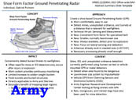

Work Experience
10/2020 - Present
Founder / Owner / Personal Business
- android Developed three Android Apps from concept to production deployment on the Google Play store along with all advertising videos and promotional materials.
- location_city Retro style (Gameboy) tile based rendering engine city builder in Java / OpenGL with GPU accelerated user interface and pan, zoom, multi-touch map interaction, and Google Play Billing 4.1 integration with InApp and Subscription purchases.
- photo_camera_front Photo editor and accessory visualizer with feature recognition, automatic accessory positioning using machine learning, skin tone editing, makeup editing, effects, and stickers. Built using Googles ML Kit technology.
- music_cast Metronome, flash, and frequency pulse source generator with continuous flashlight; metronomes of sound, light, or vibration; randomized sources of variable distribution functions; doppler strobes with adjustable delay and phase amplitude; and morse code pulses in ITU standard with variable speed.
- account_balance Library of Congress Friends' Choice Civics Video Game Challenge - American Cities. An entry for the Library of Congress Friends' Choice Civics Video Game Challenge meant to be a combination of a match-3 game, and a society simulation, such as the Civilization series. The basic match-3 portion features an 8x15 grid, with 8 block subtypes over a range of city attributes (Food, Industry, Health, Coins, Culture, Science, Religion, Civics). The intent is to simulate the development of a city such as Philadelphia (founded ~300 years ago) using match-3 mechanics to qualify for building purchases.
- account_balance USDA Proposal, Vertical Farming, partnership with the University of Idaho to implement a low-tech, vertical system for growing food crops while gathering volumetric output, social science, and economic data for the USDA Urban, Indoor, and Emerging Agricultural Initiative (UIE). Targeted priorities including identifying and promoting horticultural, social, and economic factors that contribute to successful urban, outdoor vertical growing with applicability to rooftop farms, outdoor vertical production, and green walls.
- account_balance Army Proposal - Ground Penetrating Radar, proposal to Army xTechSearch 8 for a shoe based Ground Penetrating Radar that detects buried threats to warfighters such as mines, IEDs, and unexploded ordnance.
- account_balance NASA Proposal - Plant Growth in Lunar Regolith, proposal to NASA solicitation "E.9 Space Biology Research Studies" to characterize the effects that exposure to multiple varieties of lunar simulant have on plant biology, physiology, growth, and development for five crops (lettuce, cabbage, tomatoes, mizuna, kale) including effects of space-relevant radiation, and altered light spectra.
- account_balance NASA Proposal - Antenna Balloons, proposal to NASA Innovative Advanced Concepts for cubesat inflatable satellites.
- account_balance NASA Proposal - Cubesat Thrusters, proposal to NASA Innovative Advanced Concepts for cubesats with innovative propulsion. link 


8/2020 - 10/2021
Concept Review Panelist
- contract_edit Created and submitted seven proposals for consideration to NIAC on topics such as digital contacts, actuatorless avionics, economical gas gun cargo transport, and variable frame rate DSP.
- grading Based on the proposals, selected as concept evaluator for further NIAC phases.
- rubric Reviewed and evaluated proposals for the NASA Innovative Advanced Concepts (NIAC) program to determine innovation, credibility, eligibility, feasibility, and value to the government.
- diversity_2 Participated in working groups to downselect proposals for funding and determine recipients of $175,000 funding grants.
- rate_review Wrote full length reviews as primary reviewer for multiple proposals while also contributing as secondary author and review panelist to numerous further proposals.
- link
10/2015 - 03/2019
Volunteer Teacher
- co_present Simultaneously taught six classes in business, engineering, photography, computer programming, economics, and drawing to students at Project Hope in Nablus, Palestine to classes of between 5-20 students including preparing coursework, lesson plans, daily activities, & learning questions.
- volunteer_activism Volunteered in Palestine, Jordan, and the nearby refugee areas (community outreach, repairs, cleaning, beautifying)
- hiking Engaged in solo walk across Northern Africa, Europe, the Middle East, India, Nepal, South America, Central America, and North America.
- link
09/2007 - 10/2014
Program Manager / Lead Engineer
- groups Program manager for engineering services contract worth approx. $5 million / year. Established policy, objectives, labor / budget estimates, and task priorities for a team of thirty on-site engineers in support of NASA mission at Marshall Space Flight Center (MFSC). Liaised with customers and teammates to negotiate resource allocation, contract goals / objectives, and performance timeframes. Analyzed contract performance, recruited highly skilled workforce of subject matter experts, and developed proposals for future work.
- business_center Board seat on larger umbrella contracts (Engineering, Science and Technical Services [ESTS,NNM05AB50C] and Engineering and Science Services and Skills Augmentation [ESSSA, NNM12AA41C]) for engineering and technical services worth approx. $150,000,000 / year. Provided contract policy guidance; worked with multi-corporate team to establish yearly, monthly and weekly overarching contract objectives; negotiated with teammates for labor, budget, and support efforts; and directly worked integrated onsite with federal customer at NASA MSFC.
- supervisor_account Lead engineer for NASAs debris analysis team and head of the debris working group for the Space Launch System (SLS). Guided the technical efforts of 10 immediate representatives from SLS elements (Booster, Core, ect..) and linked programs (Ground Systems/KSC, Orion/MPCV), and by extension the work of their associated support teams. Identified, tracked, and mitigated debris risks to the new vehicle by guiding analysis, tests, and redesigns of affected hardware. Out-briefed status and plans to all levels of management including SLS program head and chief engineer for SLS.
- storage Principal Investigator for supercomputing and analysis tasks for fluid dynamics & acoustics in support of the Space Launch System program worth $5 million / year. Integrated with users, computing administrators, and NASA customers to prioritize investigations, plan usage, administrate resource access, negotiate conflicts, analyze performance, and develop projections for future allocations & work. Coordinated release of results to wider audience and user participation in relevant conferences to distribute results.
- connect_without_contact Lead developer and liaison to external contractors for efforts to improve modeling and simulation capabilities of fluid dynamics, debris, and acoustics modeling software for Space Launch System and Space Shuttle support. Guided efforts to research new methods of simulation, to disseminate those methods through the greater scientific community with publications / conferences, and to incorporate those improved methods into production code under constant use on Space Launch System and Space Shuttle programs.
- trophy Authored eight (8) publications for NASA and journals / conferences related to our work at NASA, in addition to four demos at Supercomputing (SC11 and SC12)
- trophy Honored eight times with performance awards including two agency level awards for reduction of real risk to the Space Shuttle vehicle. link link link link


08/2006 - 08/2007
Founder / Owner / Personal Business
- add_business Founded a small business venture and created a software product to procedurally generate 3D content for use in digital entertainment and mapping applications. Researched requirements of potential market, established software architecture, planned development effort, and synthesized a functional software application to generate procedural landscapes or recreate terrain from known map coordinates in 3D.
- altitude Incorporated level of detail, texture generation, procedural foliage, and Geographic Information Service integration into synthetic 3D environments.
- finance_mode Developed market survey, financial prospectus, intellectual property outlook, and overall business plan for marketing of application to potential investors.
08/2004 - 08/2006
Post Graduate Researcher
- graphic_eq Formed analytical models to represent new breeds of electrostatic foam transducers from experimental vibration mode and audio data collection. Set research goals, planned experimental activities, and coordinated activities of undergraduate associates to achieve goals.
- experiment Developed and performed experimental tests of electrostatic materials to characterize response and anchor analytic work.
- delivery_truck_speed Coordinated international delivery and purchasing of both research equipment and supplies for creation of an acoustics research laboratory.

10/1999 - 08/2002
Senior Design Engineer
- groups Managed teams of up to five to fulfill project goals across fields of electronics, software, production, quality testing, and advertising.
- military_tech Led effort which developed successful prototype of high precision bio-agent detection system for US military utilizing standoff infrared spectrometry and integrated digital signal processing.
- polymer Created polymer modulation and testing system for use in thermal extremes which incorporated adaptive temperature control, sample modulation, and tensioning. Collaborated with the Department of Defense, industry customers, and external vendors to establish product goals, assure final deliverable quality, and generate lead time projections.


 link
link


Publications
2012
J. S. West, L. L. Strutzenberg, G. C. Putnam, P. Liever, and B. Williams. 18th AIAA/CEAS Aeroacoustics Conference (33rd AIAA Aeroacoustics Conference), p. 2094.
- groups J. S. West, L. L. Strutzenberg, G. C. Putnam, P. Liever, and B. Williams.
- newsstand 18th AIAA/CEAS Aeroacoustics Conference (33rd AIAA Aeroacoustics Conference)
- book_ribbon p. 2094.
- calendar_clock June 4th, 2012
- quick_reference This paper presents the development effort to establish modeling capabilities for launch vehicle liftoff acoustics and ignition transient environment predictions. Peak acoustic loads experienced by the launch vehicle occur during liftoff with strong interaction between the vehicle and the launch facility. Acoustic prediction engineering tools based on empirical models are of limited value in efforts to proactively design and optimize launch vehicles and launch facility configurations for liftoff acoustics. Modeling approaches are needed that capture the important details of the plume flow environment including the ignition transient, identify the noise generation sources and allow assessment of the effects of launch pad geometric details and acoustic mitigation measures such as water injection. This paper will present a status of the CFD tools developed by the Marshall Space Flight Center (MSFC) Fluid Dynamics Branch featuring relevant advanced multi-physics modeling capabilities and related efforts to establish a hybrid acoustic environment modeling capability combining CFD with a Boundary Element Method (BEM) acoustic field propagation model.
- attachment
2012
M Mehta, B Williams, GC Putnam, SD Smith, 2012 Thermal and Fluids Workshop, Pasadena, CA
- groups M. Mehta, B. Williams, G. C. Putnam, S. D. Smith
- newsstand 2012 Thermal and Fluids Workshop, Pasadena, CA
- book_ribbon p. 38
- calendar_clock August 2012
- quick_reference In support of prediction of the launch pad plume deflector environments during solid rocket booster derived NASA STS (Space Shuttle) vehicle ascent, the solid rocket motor plumes have been successfully modeled and analyzed with the Loci-CHEM Navier-Stokes computational fluid dynamics (CFD) code - Lagrangian Model at a steady-state approximation. Three main areas have been addressed in this paper: (1) sensitivity study of the Loci-CHEM-Lagrangian model with various other Loci-CHEM modeling approaches; (2) in-depth analysis of the aerophysics associated with solid rocket motor plumes; (3) comparison studies between the CFD numerical simulations and flight data and an independent engineering code, Reacting and Multi-Phase Program (RAMP2). The reusable solid rocket motor plumes are a multi-phase flow which contains both plume gases and ~16% solid aluminum oxide particles by mass. This contribution of solid particles is shown to have a large impact on the aerophysics of the plume gases and the environments of the launch pad plume deflector. The Loci-CHEMLagrangian model shows the best overall agreement with plume deflector flight data and the RAMP2 engineering code. These modeling approaches are being implemented to conduct higher fidelity numerical simulations for the Space Launch System ascent and launch pad environments.
- attachment
2012
R Coker, G Putnam, 19th Advanced Space Propulsion Workshop , NASA George C. Marshall Space Flight Center, Huntsville, AL, no. M12-2257.
- groups R. Coker, G. C. Putnam
- newsstand 19th Advanced Space Propulsion Workshop
- book_ribbon no. M12-2257.
- calendar_clock November 27th, 2012
- quick_reference The focus of the presented work is on the creation of a system of grazing incidence, supermirror waveguides for the capture and reuse of fission sourced neutrons. Within research reactors, neutron guides are a well known tool for directing neutrons from the confined and hazardous central core to a more accessible testing or measurement location. Typical neutron guides have rectangular, hollow cross sections, which are crafted as thin, mirrored waveguides plated with metal (commonly nickel). Under glancing angles with incoming neutrons, these waveguides can achieve nearly lossless transport of neutrons to distant instruments. Furthermore, recent developments have created supermirror surfaces which can accommodate neutron grazing angles up to four times as steep as nickel. A completed system will form an enclosing ring or spherical resonator system to a coupled neutron source for the purpose of capturing and reusing free neutrons to sustain and/or accelerate fission. While grazing incidence mirrors are a known method of directing and safely using neutrons, no method has been disclosed for capture and reuse of neutrons or sustainment of fission using a circular waveguide structure. The presented work is in the process of fabricating a functional, highly curved, neutron supermirror using known methods of Ni-Ti layering capable of achieving incident reflection angles up to four times steeper than nickel alone. Parallel work is analytically investigating future geometries, mirror compositions, and sources for enabling sustained fission with applicability to the propulsion and energy goals of NASA and other agencies. Should research into this concept prove feasible, it would lead to development of a high energy density, low mass power source potentially capable of sustaining fission with a fraction of the standard critical mass for a given material and a broadening of feasible materials due to reduced rates of release, absorption, and non-fission for neutrons. This advance could be applied to direct propulsion through guided fission products or as a secondary energy source for high impulse electric propulsion. It would help meet national needs for highly efficient energy sources with limited dependence on fossil fuels or conflict materials, and it would improve the use of low grade fissile materials which would help reduce national stockpiles and waste.
- attachment
2011
G. C. Putnam, JANNAF 8th Modeling and Simulation Subcommittee Meeting, NASA George C. Marshall Space Flight Center, Huntsville, AL, no. M11-0635.
- groups G. C. Putnam
- newsstand JANNAF 8th Modeling and Simulation Subcommittee Meeting
- book_ribbon no. M11-0635.
- calendar_clock December 5th, 2011
- quick_reference The Ares I Scale Model Acoustics Test (ASMAT) is a series of live-fire tests of scaled rocket motors meant to simulate the conditions of the Ares I launch configuration. These tests have provided a well documented set of high fidelity measurements useful for validation including data taken over a range of test conditions and containing phenomena like Ignition Over-Pressure and water suppression of acoustics. To take advantage of this data, a digital representation of the ASMAT test setup has been constructed and test firings of the motor have been simulated using the Loci/CHEM computational fluid dynamics software. Within this first of a series of papers, results from ASMAT simulations with the rocket in a held down configuration and without water suppression have then been compared to acoustic data collected from similar live-fire tests to assess the accuracy of the simulations. Detailed evaluations of the mesh features, mesh length scales relative to acoustic signals, Courant-Friedrichs-Lewy numbers, and spatial residual sources have been performed to support this assessment. Results of acoustic comparisons have shown good correlation with the amplitude and temporal shape of pressure features and reasonable spectral accuracy up to approximately 1000 Hz. Major plume and acoustic features have been well captured including the plume shock structure, the igniter pulse transient, and the ignition overpressure. Finally, acoustic propagation patterns illustrated a previously unconsidered issue of tower placement inline with the high intensity overpressure propagation path.
- attachment

2011
G. C. Putnam, JANNAF 5th Spacecraft Propulsion Subcommittee Meeting, NASA George C. Marshall Space Flight Center, Huntsville, AL, no. M11-0653.
- groups L. L. Strutzenberg, G. C. Putnam
- newsstand JANNAF 5th Spacecraft Propulsion Subcommittee Meeting
- book_ribbon no. M11-0653.
- calendar_clock December 5th, 2011
- quick_reference The Ares I Scale Model Acoustics Test (ASMAT) is a series of live-fire tests of scaled rocket motors meant to simulate the conditions of the Ares I launch configuration. These tests have provided a well documented set of high fidelity measurements useful for validation including data taken over a range of test conditions and containing phenomena like Ignition Over-Pressure and water suppression of acoustics. Expanding from initial simulations of the ASMAT setup in a held down configuration, simulations have been performed using the Loci/CHEM computational fluid dynamics software for ASMAT tests of the vehicle at 5 ft. elevation (100 ft. real vehicle elevation) with worst case drift in the direction of the launch tower. These tests have been performed without water suppression and have compared the acoustic emissions for launch structures with and without launch mounts. In addition, simulation results have also been compared to acoustic and imagery data collected from similar live-fire tests to assess the accuracy of the simulations. Simulations have shown a marked change in the pattern of emissions after removal of the launch mount with a reduction in the overall acoustic environment experienced by the vehicle and the formation of highly directed acoustic waves moving across the platform deck. Comparisons of simulation results to live-fire test data showed good amplitude and temporal correlation and imagery comparisons over the visible and infrared wavelengths showed qualitative capture of all plume and pressure wave evolution features.
- attachment
2011
G. C. Putnam, JANNAF 8th Modeling and Simulation Subcommittee Meeting, NASA George C. Marshall Space Flight Center, Huntsville, AL, no. M11-0657.
- groups L. L. Strutzenberg, G. C. Putnam
- newsstand JANNAF 8th Modeling and Simulation Subcommittee Meeting
- book_ribbon no. M11-0657.
- calendar_clock December 5th, 2011
- quick_reference The Ares I Scale Model Acoustics Test (ASMAT) is a series of live-fire tests of scaled rocket motors meant to simulate the conditions of the Ares I launch configuration. These tests have provided a well documented set of high fidelity measurements useful for validation including data taken over a range of test conditions and containing phenomena like Ignition Over-Pressure and water suppression of acoustics. Building on dry simulations of the ASMAT tests with the vehicle at 5 ft. elevation (100 ft. real vehicle elevation), wet simulations of the ASMAT test setup have been performed using the Loci/CHEM computational fluid dynamics software to explore the effect of rainbird water suppression inclusion on the launch platform deck. Two-phase water simulation has been performed using an energy and mass coupled lagrangian particle system module where liquid phase emissions are segregated into clouds of virtual particles and gas phase mass transfer is accomplished through simple Weber number controlled breakup and boiling models. Comparisons have been performed to the dry 5 ft. elevation cases, using configurations with and without launch mounts. These cases have been used to explore the interaction between rainbird spray patterns and launch mount geometry and evaluate the acoustic sound pressure level knockdown achieved through above-deck rainbird deluge inclusion. This comparison has been anchored with validation from live-fire test data which showed a reduction in rainbird effectiveness with the presence of a launch mount.
- attachment

2011
G. C. Putnam, 162nd Acoustical Society of America (ASA) Meeting, San Diego, CA, Paper M11, Volume 1226
- groups G. C. Putnam
- newsstand 162nd Acoustical Society of America (ASA) Meeting, San Diego, CA
- book_ribbon Paper M11, Volume 1226
- calendar_clock November 3rd, 2011
- quick_reference Outline Introduction Overview of the Ares Scale Model Acoustic Test (ASMAT) Simulation goal and procedure Case Progression Initial Attempt at Elevation 0 (Pathfinder) Ignition Transient and Throat Plug Release Model Refinement Conclusions / Future Work 2 Page 3 Introduction : ASMAT Overview Ares Scale Model Acoustic Test Tests of 5% scale model of Ares I vehicle Addressed vibration / acoustic risks from Constellation Program. Physical Test Setup Scale model powered by Rocket Assisted Take-Off (RATO) motor Vehicle at point of, or just after, lift-off Stationary in space during firing 100+ pressure transducers on the launch structure and vehicle (locations later) Simulation Interest Well documented set of high fidelity measurements for CFD validation Demonstration of CFD capability for IOP prediction
- attachment
2011
G. C. Putnam, Defense Advanced Research Projects Agency: 100 Year Starship Symposium, Education, Society, Legal and Economic Panel, 2:45
- groups G. C. Putnam
- newsstand Defense Advanced Research Projects Agency: 100 Year Starship Symposium
- book_ribbon Education, Society, Legal and Economic Panel, 2:45
- calendar_clock October 1st, 2011
- quick_reference ESELC Summary: Education as a mission, Who goes, who stays, To profit or not, Economies in space, Communications back to Earth, Political ramifications, Round-trip legacy investments assets left behind
- attachment

2011
G. C. Putnam, L. L. Strutzenburg, The Journal of the Acoustical Society of America, Volume 130, Issue 4, p. 2543-2543
- groups G. C. Putnam, L. L. Strutzenburg
- newsstand The Journal of the Acoustical Society of America
- book_ribbon Volume 130, Issue 4, p. 2543-2543
- calendar_clock October, 2011
- quick_reference The Ares I scale model acoustics test (ASMAT) is a series of live-fire tests of scaled rocket motors meant to simulate the conditions of the Ares I launch configuration. These tests have provided a well documented set of high fidelity acoustic measurements useful for validation including data taken over a range of test conditions and containing phenomena like ignition over-pressure and water suppression of acoustics. To take advantage of this data, a digital representation of the ASMAT test setup has been constructed and test firings of the motor have been simulated using the Loci/CHEM computational fluid dynamics software. Results from ASMAT simulations with the rocket in both held down and elevated configurations, as well as with and without water suppression have been compared to acoustic data collected from similar live-fire tests. Results of acoustic comparisons have shown good correlation with the amplitude and temporal shape of pressure features and reasonable spectral accuracy up to approximately 1000 Hz. Major plume and acoustic features have been well captured including the plume shock structure, the igniter pulse transient, and the ignition overpressure.
- attachment
2010
R. S. Budwig, M. J. Anderson, G. C. Putnam, C. Manning, Ultrasonics, Volume 50, Issue 1, p. 26-31
- groups R. S. Budwig, M. J. Anderson, G. C. Putnam, C. Manning
- newsstand Ultrasonics
- book_ribbon Volume 50, Issue 1, p. 26-31
- calendar_clock January 1st, 2010
- quick_reference Identification of bio-aerosol particles may be enhanced by size sorting before applying analytical techniques. In this paper, the use of ultrasonic acoustic radiation pressure to continuously size fractionate particles in a moving air stream is described. Separate particle-laden and clean air streams are introduced into a channel and merged under laminar flow conditions. An ultrasonic transducer, mounted flush to one wall of the channel, excites a standing ultrasonic wave perpendicular to the flow of the combined air stream. Acoustic radiation forces on the particles cause them to move transverse to the flow direction. Since the radiation force is dependent upon the particle size, larger particles move a greater transverse distance as they pass through the standing wave. The outlet flow is then separated into streams, each containing a range of particle sizes. Experiments were performed with air streams containing glass microspheres with a size distribution from 222 m, using a centerline air stream velocity of approximately 20 cm/s. An electrostatic transducer operating at a nominal frequency of 50 kHz was used to drive an ultrasonic standing wave of 150 dB in pressure amplitude. The microsphere size distributions measured at the outlet were compared with the predictions of a theoretical model. Experiments and theory show reasonable correspondence. The theoretical model also indicates an optimal partitioning of the particle-laden and clean air inlet streams.
- link
2005
M. J. Anderson, A. C. Cluff, E. C. Lemmon, G. C. Putnam, The Journal of the Acoustical Society of America, Volume 117, Issue 3, p. 1122-1128
- groups M. J. Anderson, A. C. Cluff, E. C. Lemmon, G. C. Putnam
- newsstand The Journal of the Acoustical Society of America
- book_ribbon Volume 117, Issue 3, p. 1122-1128
- calendar_clock March, 2005
- quick_reference The application of a slightly curved reflector to increase the amplitude of an ultrasonic standing wave in a semi-infinite rectangular channel was explored. Air was assumed to be the acoustic medium in the channel. Excitation of the standing wave was assumed to be provided by a square transducer flush-mounted to one wall of the channel. A slight curvature was placed in the reflecting wall of the channel. A finite element analysis was used to predict the amplitude of the standing wave that would be excited in the channel. A perfectly matched layer was used to model the semi-infinite channel geometry. At frequencies near 50 kHz, for source ranging from 6.6 to 26.6, and channel depths necessary to excite standing waves at one-half and one wavelength resonance, the computations predicted that an increase in acoustic pressure amplitude from 2 to 11 dB could be achieved with a reflector whose depth of curvature was 16% of the channel depth. Much of this increase could be obtained with curvatures of smaller depth. Experiments with a channel and reflector of representative geometry gave a measured increase in acoustic pressure amplitude of 4.86 dB.
- link
2004
M. J. Anderson, A. C. Cluff, E. C. Lemmon, G. C. Putnam, The Journal of the Acoustical Society of America, Volume 116, Issue 4, p. 2598-2598
- groups M. J. Anderson, A. C. Cluff, E. C. Lemmon, G. C. Putnam
- newsstand The Journal of the Acoustical Society of America
- book_ribbon Volume 116, Issue 4, p. 2598-2598
- calendar_clock October, 2004
- quick_reference One way to separate small particles from a moving air stream is to pass the stream through an intense ultrasonic standing wave. If the standing wave propagates perpendicular to the fluid flow direction, acoustic radiation pressure will move the particles to specific locations in the stream, where they can be collected at the stream outlet. Of primary importance is to achieve very high pressure amplitude in the standing wave, in spite of the presence of openings for fluid flow. In this presentation, the use of a slightly curved reflector within a flow channel to increase the amplitude of an ultrasonic standing wave is discussed. A finite element analysis was used to predict the amplitude of the standing wave that would be excited in a semiinfinite channel. A perfectly matched layer was used to account for the semiinfinite geometry. The finite element analysis showed that a significant gain in amplification within the channel could be achieved with a surprisingly small amount of reflector curvature. Experiments show that much of this gain can be obtained in practice.
- link

2004
G. C. Putnam, University of Idaho, Master's Thesis, Dept. of Mechanical Engineering, Moscow, Idaho, USA
- groups G. C. Putnam
- newsstand University of Idaho
- book_ribbon Master's Thesis
- calendar_clock June, 2004
- quick_reference Acoustic amplification within a partially enclosed cavity has a number of uses in applications where mass must enter and leave the cavity. This work describes an optimization process, which was used to maximize the performance of such a cavity for use in separation of airborne particulates. The acoustic source of the cavity, the shape of the reflector used within the cavity, and the paths of particles flowing through the cavity were all investigated. It was found that for frequencies in the vicinity of 50 kHz, electrostatic transducers can be designed which provide significant gains in acoustic resonant pressure and quality factor over conventional Polaroid and piezoelectric technologies. It was also noted that for curved reflector technologies, the presence of a curved reflector did improve both pressure and quality factors. However, the achievable experimental gains were significantly less than those predicted through theoretical models. Finally, it was found that when implemented within a model resonator, the presence of a curved reflector induced little unwanted particle motion within the flow and significantly improved separation performance.
2003
M. J. Anderson, R. S. Budwig, A. C. Cluff, E. C. Lemmon, G. C. Putnam, Proceedings of the 2003 World Congress on Ultrasonics, Paris, p. 1615-1621
- groups M. J. Anderson, R. S. Budwig, A. C. Cluff, E. C. Lemmon, G. C. Putnam
- newsstand Proceedings of the 2003 World Congress on Ultrasonics, Paris
- book_ribbon p. 1615-1621
- calendar_clock September 7th-10th, 2003
- quick_reference A potential application of ultrasound is the separation of small particles from a moving airborne aerosol. Previous studies have shown that it is feasible to extract small particles from a moving stream of water. The thermodynamic and transport properties of the suspension fluid control the mechanisms available for separation, the forces that can be exerted, and the practical dimensions of ultrasonic airborne particle separators. Fundamental models exist that allow comparison of electrostatic and piezoelectric transduction in general for ultrasonic particle separation. Finite element studies show that allowance for slight curvatures in flow channel geometry can increase achievable acoustic pressures. We describe analyses and experiments that consider these factors for ultrasonic particle separation in air. The potential performance of ultrasonic separation in air is then compared to competing inertial technologies.
- attachment
Conference Demos
2012
G. C. Putnam, B. Williams, P. Davis, Supercomputing 12, Salt Lake City, Utah, NASA@SC12 Booth
- groups G. C. Putnam, B. Williams, P. Davis
-
newsstand Supercomputing 12, Salt Lake City, Utah
- book_ribbon NASA@SC12 Booth
- calendar_clock November 10th-16th, 2012
- quick_reference Using thousands of processors on the Pleiades supercomputer at the NASA Advanced Supercomputing Division (NAS) at Ames Research Center, Moffett Field, Calif., the MSFC Fluid Dynamics team ran more than 40 CFD simulations, each spanning several weeks and requiring multiple terabytes of storage to process hundreds of individual gigabyte-scale files for visualization, post-processing, and data analysis. These simulations capture the sources of the acoustic waves and follow the action to track their effects throughout the launch environment. Validated results are provided to SLS engineers so they can optimize the design of the vehicle and launch components.
- attachment
- link
2012
G. C. Putnam, Supercomputing 12, Salt Lake City, Utah, NASA@SC12 Booth
- groups G. C. Putnam
-
newsstand Supercomputing 12, Salt Lake City, Utah
- book_ribbon NASA@SC12 Booth
- calendar_clock November 10th-16th, 2012
- quick_reference During liftoff, the Space Launch System's (SLS) solid rocket boosters (SRBs) send large amplitude pressure waves into the confined space of the launch structure. These ignition overpressure (IOP) waves, which radiate throughout the launch environment, can cause damage to the launch structure, the vehicle, and the payload, and must be well understood during the design process. Rocket plume gas and evaporating suppression water interact as the ignition overpressure (IOP) wave propagates through the launch tower. The validation provided confidence that CFD methods could accurately predict phenomena such as IOP in the full-scale SLS launch environment. The full-scale analysis was decoupled into component problems that could be simulated and validated independently, then used to inform simulations of the full-scale integrated vehicle. The first component problem examined the propagation of acoustic waves through the launch environment. The simulations tracked the propagation of acoustic waves in both dry launch pad conditions and in conditions with water-based sound suppression systems activated. The second component performed time-accurate, fully 3D simulations of the SRB ignition transient and was used to create a time-dependent profile the rocket internal dynamics as an input to further simulations for SLS launch-induced environments. Finally, using the results of the sub-scale and SRB simulations, full-scale simulations were performed of the SLS launch environment with the goal of resolving tool uncertainties that could not account for differences from the Shuttle to SLS configuration.
- attachment
- image
- link
2012
G. C. Putnam, Supercomputing 12, Salt Lake City, Utah, NASA@SC12 Booth
- groups G. C. Putnam
-
newsstand Supercomputing 12, Salt Lake City, Utah
- book_ribbon NASA@SC12 Booth
- calendar_clock November 10th-16th, 2012
- quick_reference Validations against recent NASA test data have shown that modern Computational Fluid Dynamics (CFD) codes can make meaningful pressure predictions over the full launch pad for frequencies up to 150 Hz, high enough that significant phenomena such as the transient startup and overpressure pulse of rockets can be modeled. These validations have provided confidence in the results of CFD simulations, allowing them to make immediate impacts on the design of NASA's new Space Launch System (SLS). Modifications to the mobile launcher, flame deflector, vehicle base, and liftoff design have all been influenced by this work. However, simulations have been limited in their validation and use to dry launch pads. To examine the full range of designs, multi-phase capability has been developed in partnership with Mississippi State University and used to simulate the effects of water suppression for a wet launch pad validation case. Emission, flight, and evaporation of water spray systems have been simulated on an active launch pad by using a two-phase approach that includes Lagrangian water particles and gas phase CFD elements. The simulation was based on a test case from the Ares I Scale Model Acoustic Test so that pressure predictions from across the launch pad could be validated against real data. Approximately 200 million grid cells were used to capture the fine detail and geometry of the pad, and millions of particles were tracked to capture the dynamics of a water cascade. This work was performed using a density-based, finite-volume CFD code called Loci/CHEM.
- attachment
- image
- videocam
- link
2011
G. C. Putnam, Supercomputing 11, Seattle, Washington, NASA@SC11 Booth
- groups G. C. Putnam
-
newsstand Supercomputing 11, Seattle, Washington
- book_ribbon NASA@SC11 Booth
- calendar_clock November 12th-18th, 2011
- quick_reference Validations against recent NASA test data have shown that modern Computational Fluid Dynamics (CFD) codes can make meaningful pressure predictions over the full launch pad for frequencies up to 150 Hz, high enough that significant phenomena such as the transient startup and overpressure pulse of rockets can be modeled. These validations have provided confidence in the results of CFD simulations, allowing them to make immediate impacts on the design of NASA's new Space Launch System (SLS). Modifications to the mobile launcher, flame deflector, vehicle base, and liftoff design have all been influenced by this work. However, simulations have been limited in their validation and use to dry launch pads. To examine the full range of designs, multi-phase capability has been developed in partnership with Mississippi State University and used to simulate the effects of water suppression for a wet launch pad validation case. Emission, flight, and evaporation of water spray systems have been simulated on an active launch pad by using a two-phase approach that includes Lagrangian water particles and gas phase CFD elements. The simulation was based on a test case from the Ares I Scale Model Acoustic Test so that pressure predictions from across the launch pad could be validated against real data. Approximately 200 million grid cells were used to capture the fine detail and geometry of the pad, and millions of particles were tracked to capture the dynamics of a water cascade. This work was performed using a density-based, finite-volume CFD code called Loci/CHEM.
- attachment
- videocam
- image
- link
Professional Awards
2009
"Exemplary improvements to Liftoff Debris task"
2008
"Exceptional analysis of Shuttle Flame Trench debris risk"
"Exceptional improvements to Engineering, Science and Technical Services (ESTS) contract performance"
- groups G. C. Putnam
- newsstand Jacobs
- contract_edit NASA MSFC Engineering, Science and Technical Services (ESTS)[NNM05AB50C]
"Liftoff Analysis and Launch Vehicle Simulation Tasks" for Engineering, Science and Technical Services (ESTS) contract in support of NASA Fluid Dynamics Branch (ER42)
- groups G. C. Putnam
- newsstand Jacobs
- contract_edit NASA MSFC Engineering, Science and Technical Services (ESTS)[NNM05AB50C]
"Process improvements with significant monetary customer savings" for Engineering, Science and Technical Services (ESTS) contract in support of NASA Fluid Dynamics Branch (ER42)
- groups G. C. Putnam
- newsstand Jacobs
- contract_edit NASA MSFC Engineering, Science and Technical Services (ESTS)[NNM05AB50C]
OpenGL
2024-2025
- groups G. C. Putnam
- language Hello Triangle, LearnOpenGL
- quick_reference Program demonstrating one of the hardest parts of modern OpenGL, drawing your first triangles with keyboard input.

download DownloadDownload Hello Triangle Example
2024-2025
- groups G. C. Putnam
- language Shaders, LearnOpenGL
- quick_reference Program demonstrating implementing and compiling a simple three color shader in OpenGL.
download DownloadDownload Shaders Example
2024-2025
- groups G. C. Putnam
- language Textures, LearnOpenGL
- quick_reference Program demonstrating drawing geometry with colorized and textured surfaces. Keyboard input to swap render modes.
download DownloadDownload Textures Example
2024-2025
- groups G. C. Putnam
- language Transforms, LearnOpenGL
- quick_reference Program demonstrating drawing geometry displaced, scaled, and rotated with matrix transforms.
download DownloadDownload Transforms Example
2024-2025
- groups G. C. Putnam
- language Coordinate Systems, LearnOpenGL
- quick_reference Program demonstrating drawing multiple shapes with 3D perspective projection, color, textures, transforms, and keyboard input.
download DownloadDownload Coordinate Systems Example
2024-2025
- groups G. C. Putnam
- language Camera, LearnOpenGL
- quick_reference Program demonstrating adding a user moveable camera to the scene of objects from previous examples.
download DownloadDownload Camera Example
2024-2025
- groups G. C. Putnam
- language Colors, LearnOpenGL
- quick_reference Program demonstrating adding simplistic lighting with constant object and light color.
download DownloadDownload Colors Example
2024-2025
- groups G. C. Putnam
- language Basic Lighting, LearnOpenGL
- quick_reference Program demonstrating adding ambient, diffuse, and specular phong lighting.
download DownloadDownload Basic Lighting Example
2024-2025
- groups G. C. Putnam
- language Materials, LearnOpenGL
- quick_reference Program demonstrating (amb, diff, spec) colored materials with varying lighting, and normal maps.
download DownloadDownload Materials Example
2024-2025
- groups G. C. Putnam
- language Lighting Maps, LearnOpenGL
- quick_reference Program demonstrating (diff, spec) material lighting maps along with multi-image textures. The varying light was also made constant color.
download DownloadDownload Lighting Maps Example
2024-2025
- groups G. C. Putnam
- language Light Casters, LearnOpenGL
- quick_reference Program demonstrating different lighting types (ambient, directional, point, spot, point attenuating, spot attenuating.
download DownloadDownload Light Casters Example
2024-2025
- groups G. C. Putnam
- language Multiple Lights, LearnOpenGL
- quick_reference Program demonstrating scenes with colored backgrounds and multiple lights with different colors and intensities.
download DownloadDownload Multiple Lights Example
2024-2025
- groups G. C. Putnam
- language Models, LearnOpenGL
- library_books OBJ Loader, Robert Smith (Bly7), Github
- deployed_code Survival Guitar Backpack, Berk Gedik, Sketchfab
- article "Improved alpha-tested magnification for vector textures and special effects." Green, Chris. ACM SIGGRAPH 2007 courses, pp. 9-18. 2007. Steam CDN. (also provided below in a minified copy)
- quick_reference Program demonstrating OBJ model loading (OBJ Loader was used rather than ASIMP in the LearnOpenGL example) along with Signed Distance Field Fonts based on the 2007 SIGGRAPH paper from Chris Green of Valve used for Frames Per Second (FPS) display as well as writing.
- attachment
download DownloadDownload Model and SDF Text Example
2024-2025
- groups G. C. Putnam
- language Framebuffers, LearnOpenGL
- quick_reference Program demonstrating use of offscreen framebuffers to perform multiple post-processing effects (color inversion, grayscale, unsharp mask [3x3 and 5x5], sharpen [3x3], emboss [3x3], gaussian blur [3x3, 5x5, and two-step 9x9], box blur [3x3], edge detect, lapacian blur [two-step 9x9], poisson blur [two-step 9x9], rayleigh blur [two-step 9x9], spherical blur [two-step 9x9].
download DownloadDownload Framebuffers Example
2024-2025
- groups G. C. Putnam
- language Cubemaps, LearnOpenGL
- quick_reference Program demonstrating use of cubemaps to draw a background skybox, along with visible object depth, reflection surfaces, refraction surfaces, and multi-view single shader rendering.
download DownloadDownload Cubemaps Example
2024-2025
- groups G. C. Putnam
- language Advanced GLSL, LearnOpenGL
- quick_reference Program demonstrating a particle system using point sprites.
download DownloadDownload Advanced GLSL Example
2024-2025
- groups G. C. Putnam
- language Geometry Shader, LearnOpenGL
- quick_reference Program demonstrating drawing normals, shifting vertex locations, and creating instances using a geometry shader.
download DownloadDownload Geometry Shader Example
2024-2025
- groups G. C. Putnam
- language Instancing, LearnOpenGL
- language Advanced-Lighting, LearnOpenGL
- quick_reference Program demonstrating instancing using two different methods (pre-created matrices, and matrices in the vertex shader) vs independent draw calls per object, along with blinn-phong lighting relative to regular phong lighting.
download DownloadDownload Instancing Example
2024-2025
- groups G. C. Putnam
- language Shadow Mapping, LearnOpenGL
- quick_reference Program demonstrating creating objects shadows by rendering to a object depth based shadow map (results displayed on a status panel).
download DownloadDownload Shadow Mapping Example
2024-2025
- groups G. C. Putnam
- language Point Shadows, LearnOpenGL
- quick_reference Program demonstrating creating objects shadows by rendering to a object depth based shadow map (results displayed on a status panel).
download DownloadDownload Point Shadows Example
2024-2025
- groups G. C. Putnam
- language Parallax Mapping, LearnOpenGL
- language HDR, LearnOpenGL
- quick_reference Program demonstrating parallax mapping (per pixel surface height offsets) with image exposure and gamma lighting adjustments for High Definition Rendering (HDR).
download DownloadDownload Parallax Mapping with Exposure and Gamma Example
2024-2025
- groups G. C. Putnam
- language Deferred Shading, LearnOpenGL
- quick_reference Program demonstrating deferred shading (two step shading with lighting calculated on a depth image of the geometry). Point lights have also been changed to render to four layers of a single texture rather than four textures. Further icosahedrons have been added as an additional shape.
download DownloadDownload Deferred Shading Example
2024-2025
- groups G. C. Putnam
- language Physics Based Rendering, Theory, LearnOpenGL
- language Physics Based Rendering, Lighting, LearnOpenGL
- quick_reference Program demonstrating Physics Based Rendering (PBR). Using moving and multiple point lights simulataneously.
download DownloadDownload Physics Based Rendering Example
2024-2025
- groups G. C. Putnam
- language PBR, Irradiance Based Lighting, Diffuse, LearnOpenGL
- language PBR, Irradiance Based Lighting, Specular, LearnOpenGL
- quick_reference Program demonstrating Irradiance Based Lighting with PBR. (HDR lighting cubemaps with diffuse and specular contibution). Spheres with a range of PBR textures along with tetrahedron objects were added. The ability to adjust sphere hue is included. Further, point lights can now move dynamically for changing shadows and lighting, light frustrums can be drawn on screen to show lighting extents, and the multiple point lights can be switch between for individual lighting.
download DownloadDownload Irradiance Based Lighting Example
2024-2025
- groups G. C. Putnam
- quick_reference Program refactoring the work from all the previous examples. Shaders have all been changed to have consistent naming. Font colors can now be changed. Grass models and textures have been added to test transparent objects. In addition, particles using texture storage have been added, along with paraboloid mapping shadows. Downloads had to be split for this example because the compressed files were too large.
download Download Main FilesDownload ReFactor Example download Download Additional ResourcesDownload ReFactor Additional Resources Example
Statistics of Magic the Gathering
- This is a 40+ image album of the state of the card game Magic the Gathering up until 2018.
- I start off by looking at the distribution trends for cards, card types, and keywords over the history of Magic. In addition to basic divisions, this also cover divisions like rarities, creature types, creature classes, Power (P)/Toughness (T) trends, and the use of more general "action" words like "Create" or "Sacrifice".
- Next, I perform regression analysis (Ax = b, where A are the traits / card, x are the trait values, and b are the card Converted Mana Cost (CMC)) to explore the value of various card traits in CMC.
- Said another way, I try to answer the question "how much is a given trait worth in CMC?" ex: Power is currently valued more highly than Toughness with a point of Power ~worth 0.5 CMC while a point of Toughness is worth 0.4 CMC. Both have also been increasing with time. This is done on a per / block basis so that I would have enough cards to do the regression with.
- Finally, I look at how the art of Magic the Gathering has changed over time. To do so, I collected samples of the art for every card released and performed what is known as Perceptual Hash Analysis on those cards (www.phash.org)
- The basic idea of a perceptual hash is that it compares art / images and gives you a number which represents the distance of those images from one another. For each set in Magic, I then constructed a matrix of all of these distances and then backsolved to find the positions of the images as if they were points in space using a technique called Multi-Dimensional Scaling. Finally, for every art piece, I also averaged the entire art down to a single pixel so see how much correlation the average color had on the "closeness" predicted by the pHash algorithm.
- Original post on Reddit
- Original post on Imgur
2018
- groups G. C. Putnam
- quick_reference A tally of the # of cards released per block / year over the history of magic. Summation performed from Aug(yr N) - Aug(yr N+1). This puts the yearly set (ex: Magic Origins (ORI, 15, web_stories) or Magic 2015 (M15, 14, web_stories)) as the capstone of the year with a new rotation generally starting Sept-Oct. The choice of which year to put them in is somewhat arbitrary, but this made the cutoff's smoother as the Beta (LEB, 93, web_stories) and 2nd / Unlimited Edition (2ED, 93, web_stories) were the only major sets not released on the pre-Aug side of the year.
2018
- groups G. C. Putnam
- quick_reference Types of cards that have been released per set as a % of the set. Notable outlier, Mirrodin (MRD, 03, web_stories), which had a Huge number of artifacts. Alara (ALA, 08, web_stories) and Scars of Mirrodin (SOM, 10, web_stories) repeated this to a lesser degree, while the Theros block (THS, 13, web_stories) (BNG, 14, web_stories) (JOU, 14, web_stories), released dramatically larger #'s of enchantments. Creatures have since the very beginning held steady at ~50 % of every block.
- quick_reference The third images shows types of cards that are common, but less dominant for block percentages, as well as often having crossover with the other types. Lands have interestingly been growing as a percentage of sets, to a point that they now rival most of the lesser main types (Instant, Sorcery, Enchantment, Artifact). Legends had a huge surge in Kamigawa (CHK, 04, web_stories), and have otherwise been on a parabolic rise, while tribals had their single day during Lorwyn (LRW, 07, web_stories) / Shadowmoor (SHM, 08, web_stories), and then were largely absent. Planeswalkers, while dramatically influential in pricing and value, remain a tiny part of most sets.
2018
- groups G. C. Putnam
- quick_reference For a long time, each of the three rarities got about 1/3 of a set until ~2006-2007. Around that time, with the addition of Mythics, Commons actually rise as a percent, while Rares effectively just split their total with Mythics.
2018

- groups G. C. Putnam
- quick_reference Six (6) charts looking at the distribution of creature types among cards released, with the first being iconic creatures. The two winners here are obviously Dragons and Angels, yet while Dragons appear to be far more prominent, they actually only edge out Angels by 12 total cards. In truth, the Iconic types as a whole really see very little use for being "iconic" and both Sphinxs and Hydras are in drastic need of some attention. Surprising too, considering many Hydras have actually been very influential on their blocks (ex: Prime Hydra, Progenitus)
- quick_reference Next with characteristic creatures, it is little if not a human-centric world. They are far and away the most used type in magic only playing second fiddle in a couple of sets like Kamigawa (CHK, 04, web_stories) (spirits) and Lorwyn (LRW, 07, web_stories) / Shadowmoor (SHM, 08, web_stories) (tribal). In Lorwyn / Shadowmoor they are effectively replaced by their fractured counterparts from the Tribal groups.
- quick_reference The leftover types which are still popular and include at least 200 cards over magic history, which puts them above the "iconic" types in count. Other than the aforementioned Spirits / Elementals, Beasts are the other major group which got a lot of attention early in Magic (Masques (MMQ, 99, web_stories) / Onslaught (ONS, 02, web_stories)), and then largely faded from view. The second "popular" chart showing creature types with equal or less representation than the "iconics". Once again, Lorwyn / Shadowmoor is the source of a big spike (Giants) as well as its predecessor Time Spiral (TSP, 06, web_stories), when the Slivers came a calling. Walls used to be all over the place, but I guess we've been breaking down barriers, as they've almost completely vanished.
- quick_reference The final two charts show the second half of the major division for creatures, which is their "class" or occupation. Amusingly, the time when there was the most diversity of jobs was when there were the least Humans. Warriors have also been seeing a big surge lately with Khans of Tarkir (KTK, 14, web_stories) and Kaladesh (KLD, 16, web_stories) / Amonkhet (AKH, 17, web_stories) to the point where they now outnumber Soldiers (a long time leader). The final chart being the lesser used classes (notably, Cleric should actually be swapped with Shaman, having a lot of early use and steady later inclusion at ~2% / set) Oddly, Druids and Shamans are not particularly correlated, with the only really big set for Druids being Odyssey (ODY, 01, web_stories). The flower of Knighthood almost completely disappeared from the world, but has returned with a vengeance in the last year.
2018
- groups G. C. Putnam
- quick_reference Five (5) charts that look at cards which include the use of a keyword in the main text, organized alphabetically. First three are Evergreen keywords, where notably spikey is Flash, which tends to have about a 6 year period between bursts, and Defender which has close to a 3 year period. (Reddit commenter "Qualdrion" noted that Flash may also included parts of "Flashback" for some inaccuracy.) In this group, First Strike is easily the most consistent, rarely dropping below 2%.
- quick_reference Among the second chart, easily the most used Evergreen keyword in all of magic, Flying almost never drops below 10% in a set, and has been above 12% much of its life. Likely, as it is a steady form of evasion with numerous counter moves available. As we'll see in later graphs, this also gives it one of the most consistent valuations of a keyword. However, Haste is also quite consistent, and has apparently met with approval, as it has been on a consistent rise over time. In addition to being a hallmark for Artifacts, Mirrodin block (MRD, 03, web_stories) (DST, 04, web_stories) (5DN, 04, web_stories) is also notable for being the genesis of numerous long lived keywords like Lifelink, Indestructible, and Hexproof.
- quick_reference The last of the Evergreen keyword charts, this illustrates particularly well the longevity of two green keywords, Trample and Reach. Trample has been with us since the beginning and has generally received upward inclusion in each block with notable outliers in Homelands (HML, 95, web_stories) (high) and Kamigawa (CHK, 04, web_stories) (low). Reach is an interesting case, as like Defender, it tends to be a keyword that offsets card value, and been decidedly more spikey in its use, featuring strongly in Kamigawa and Time Spiral (TSP, 06, web_stories), then taking a major break until Theros (THS, 13, web_stories) and Khans (KTK, 14, web_stories). At the time of 2018, the story for Prowess did not appear to be very good, as it was heavily used for about two sets, but was effectively in freefall ever since.
- quick_reference Usage stats for all of the Deciduous keywords (keywords that R&D has not ruled out, but says are unlikely in the future. Reddit commenter "JimHarbor" noted many are mostly deprecated.). The graph tends to support this, as it is evident that nearly every one of these keywords started out strong and has been slowly phased out over time. Regenerate in particular is a surprising example of this trend, as at one point it was the second most popular keyword after Flying. Protection at one point was also heavily used (Odyssey (ODY, 01, web_stories)) but got culled like the rest. Theros block was when the big change to remove most happened, with the phase out happening over the next two years until Battle for Zendikar (BFZ, 15, web_stories). However, most (excluding the highly confusing "banding") had been on the decline for a long time.
- quick_reference Finally, a quick look at the split for all the types of landwalk in the game, as it actually had a huge amount of diversity for such a rarely used ability. 8 major types with Swamp and Island being the big players, and Plains being the least used. This surprised me a bit, as I mentally always tallied Forestwalk as more influential due to its presence in many Elfball style decks.
2018
- groups G. C. Putnam
- quick_reference Two (2) charts looking at Actions which can be taken by cards. Notably, Counter is a difficult case to filter, as this stat includes both cards that add "counters" to objects as well as cards which "counter" a spell. A difficult crossover of terminology. Removal effects (Destroy / Exile) are considerably more prominent than Create, but this make sense, as most spells when cast tend to "create" something. Although I focused on Discard, a notably absent action is Draw, which would likely have similar numbers. I didn't play the block, yet Odyssey (ODY, 01, web_stories) was obviously something of an outlier, as it once again features a huge spike in otherwise less commonly used terms and words (Exile / Discard) which have only recently returned to prominence.
- quick_reference Sacrifice used to be the darling of Magic the Gathering, featuring on more cards than even Flying, but has been in steady decline since the start. Part of this probably stems from the sheer number of infinite combos spawned through Sacrifice outlets. In the stats for Tap and Untap, the numbers for Tap should be significantly lower, as they overlapped with the values for Untap (regex patterns which see both)
2018
- groups G. C. Putnam
- quick_reference Two (2) charts looking at creature Power and Toughness trends. Looking at the average power and toughness its interesting to see that a) the average for both has steady risen over time, b) they nearly perfectly parallel each other's movements, and c) show no sign of plateauing (ie: the curvature has yet to start turning downward.) Apparently its just an escalating arms race where new stuff has to be a little bit stronger / tougher than old stuff. (Reddit commenter "Ulthran" noted: "AVG P/T was growing since the beginning, especially since 2003, and since 2003 average mana cost is the same or lower than it was. Plus we know that many abilities are being sticked to creatures now.") This is approximately 8th Edition (8ED, 03, web_stories) onward.
- quick_reference Looking at the max values for power and toughness, the trend is similar, although the maxima are actually surprisingly aligned, with all but three blocks having the maximum P/T be identical over 25 years. This arms race does appear to have slowed down though, as after 2012, the escalation in max values has been curving downward, which may mean the averages will start to do the same.
2018
- groups G. C. Putnam
- quick_reference Four (4) charts looking at Converted Mana Cost (CMC) trends with time. While P/T have consistently risen over time, avg CMC found its ideal value of ~3.4 around 2002 Onslaught (ONS, 02, web_stories) and has stayed that way ever since.
- quick_reference Max CMC follows a similar trend as the average, with the high mark hitting during 2001 Planeshift (PLS, 01, web_stories), Draco, and most sets oscillating around ~12 max CMC after that point. Very spikey though by comparison, swinging from 10 to 15 depending on the Set, while Avg only oscillates 0.2 between Sets.
- quick_reference Moving onto how CMC's fall into cost bands, the biggest groups are by far 2-3 and 4-5. On either side of this CMC plateau, most other cards make up only ~20% of any given set. Effectively, this is close to a Gaussian distribution with a center near 3, and a lopsided long tail for larger CMCs.
- quick_reference This ~Gaussian distribution can be seen more clearly when we look at individual CMCs per set, with nearly 60% of all cards falling into either CMC 2 (~20%), CMC3 (~20%), or CMC4 (~< 20%). Surprisingly to me, CMC1 and CMC5 are roughly equal, with contributions dramatically falling above CMC5. Personally, I thought there would be more CMC1 cards to allow for ramping into a strategy. Yet, CMC1 cards were common in Alpha (LEA, 93, web_stories) / Beta (LEB, 93, web_stories) and then plunged in number all the way until 1999. CMC2 had a big year in 1997 (~30%), and then fell to <~20% afterward, while CMC3 had a big year in 1999, and then oscillate around 20% of most releases.
2018

- groups G. C. Putnam
- quick_reference In the next set of eight (8) graphs, I have used regression analysis to solve Ax=b to find the values in mana for properties of cards. A is a matrix made up of the value of attributes (such as a creature's P/T #'s) and binary 0/1 values for whether it possesses Keywords or Actions, x is the value we are trying to solve for, and b is the known card CMC. Using Singular Value Decomposition, I find the least squares inversion of A and solve for x. One way to think of this is "how much does one point of P/T cost in mana from set to set?" In general, you could say the value for P has been getting slightly worse over time, with the current cost sitting at ~0.5, while one point of T only costs about 0.4.
- quick_reference A similar question for the value of a Variable P/T on a creature (x or * in its stat block) with the average value of such a stat sitting at ~2 mana points. Notably, variable T seems to be the more costly option (particularly in recent years) rising to a premium of 3-4 points.
- quick_reference For the third graph, the idea was to see how a Mana Symbol (or multiple) in the cost of a card affected its value (vs just being 1 mana). In these graphs, if the number is 0, the symbol is worth 1 mana, if positive (+), the symbol is worth extra mana, and if negative (-) it actually applies a cost increase (ex: from 2005-2007, each mana symbol, no matter the type, netted you ~0.4 reduction in the overall CMC of a card) Blue and Black tend to be the winners in this dept, as they more consistently give CMC reductions, while White shows decidedly worse performance during a few key years. The Invasion Block (INV, 00, web_stories) (PLS, 01, web_stories) (APC, 01, web_stories) and Mirrodin block (MRD, 03, web_stories) (DST, 04, web_stories) (5DN, 04, web_stories) (and a lesser extent Zendikar Block (ZEN, 09, web_stories) (WWK, 10, web_stories) (ROE, 10, web_stories) / Scars of Mirrodin Block (SOM, 10, web_stories) (MBS, 11, web_stories) (NPH, 11, web_stories)) were noticeably bad, with the usual discount actually turning into a cost increase. Apparently artifact planes are really bad for rainbow mana.
- quick_reference A lot of that cost reduction for Mirrodin was instead taken up by Rarity. However, since all three rose in tandem, it just means that the influence of Mana relative to Rarity changed dramatically. Historically, the discount was fairly obvious, with Rares, then Uncommon, then Common costing the most CMC. Rarity was supposed to cost a bunch. However, after Mythics were introduced in 2008, the script flipped. Now Rares and Mythics actually gave a CMC discount, making them often "better" than normal cards. This wasn't usually severe, with a notable exception being Mythics during 2015-2016 (Battle for Zendikar (BFZ, 15, web_stories) / Shadows over Innistrad (SOI, 16, web_stories)), where Mythics were ~0.5 CMC cheaper than comparable Commons / Uncommons.
- quick_reference The next three look at Keywords. Notable trends include the consistent cost discount applied by having Defender on a card (~1 CMC) and the surprising cost-discount of Deathtouch, whose CMC value actually tends to be negative.
- quick_reference The most heavily used of the Keywords, Flying, also tends to be one of the most consistently high valued, worth about 0.5 CMC on any card for its evasion. For being such a desirable property, Hexproof actually tends to be available at a CMC discount in many early years, with some initial cards severely under-costed. Indestructible is perhaps the most swingy of all the keywords, being heavily over-costed when it first came out (Kamigawa (CHK, 04, web_stories) 8CMC Myojin's and divinity counters anyone?), and then actually transitioning to a discount in later years.
- quick_reference Almost all the rest of the Keywords in the third Keyword graph have ~0 actual CMC cost or discount when included (oscillating between +/- 0.5) with the exception of Menace, which for a short time was a dramatically over-costed form of evasion.
- quick_reference The final chart looks at Action words. Despite their heavy use, few of the Action words actually apply very much CMC cost to creatures when they are added, with the exception of Create, which has generally been at least as valuable as Flying, if not dramatically moreso during the early years of Magic.
2018
- groups G. C. Putnam
- quick_reference Two final graphs summarizing CMC contributions and errors in predictions. The first looks at the contribution of various components using the prediction methods above to give a sense of scale. By far, the biggest contributors are P/T (either static or variable) followed by the Rarity of the card. Since all the Rarities actually follow closely in lockstep with one another, and have been declining over time, this means that P/T is really the largest contributor that varies significantly. In one sense, most Keywords, and Mana Symbols actually have very little impact on card costs OR those costs effectively have already been taken into account as a "baseline" for cards. (ie, it is expected most cards will have 1-2 mana symbols and 1-2 keywords, with the outliers being exceptional)
- quick_reference This graph looks at how much the predictions of creature value miss the actual value of creatures when I calculate A * x = CMC(predicted) vs CMC(actual). Error avg just takes all the errors and averages them, Error abs takes their absolute values, while RMS is the Root-Mean Square error, which squares and then square roots each error and then averages. RMS is probably the most representative and most commonly used in statistics papers with usual error being about 0.75 CMC.
2018
- groups G. C. Putnam
- quick_reference For these last sets of graphs, I wanted to look at how the art of Magic the Gathering has changed over time. To do so, I collected samples of the art for every card ever released and performed what is known as Perceptual Hash analysis on those cards (www.phash.org and WP: Perceptual Hashing)
- quick_reference The basic idea of a perceptual hash is that it compares art / images and gives you a number which represents the distance of those images from one another. For each set in Magic, I then constructed a matrix of all of these distances and then backsolved to find the positions of the images, as if they were points in space using a technique called Multi-Dimensional Scaling. The points were given three degrees of positioning freedom with X being the primary degree, Y being secondary, and Z being tertiary. While this was performed for every set, I have only included six examples for sake of brevity and to highlight interesting trends. Finally, for every art piece, I also averaged the entire art down to a single pixel so see how much correlation the average color had on the "closeness" predicted by the pHash algorithm. Short answer, not much.
- quick_reference A notable trend in color with Magic is that sets have been getting perceptibly darker over time. Legends (LEG, 1994, web_stories), was perhaps the most "pastel" set ever released, and Magic has rarely ever returned to that level of colorfulness. With later sets like Innistrad (ISD, 2011, web_stories) and Shadows over Innistrad (SOI, 2016, web_stories), the sets are damn near black. Amusingly, what was apparently one of the worst sets for the Gatewatch "heroes", as big-bad Nicol Bolas succeeded was actually one of the brightest / happiest sets in the art, while every set the Gatewatch feature prominently in has been dark, dark, dark. Makes you wonder who the "good" guys actually are? Or perhaps, it's all actually rather evil in Magic the Gathering land, and heroic folks are not much liked.
- quick_reference Most main releases, like 5th Edition (5ED, 1997, web_stories) tend to have a primary blob of similar art with an extended halo of art with more variety. Expansions, "usually" seem to have much less concentration and more variety all throughout. From the Perceptual Hash algorithm's perspective, Urza's Destiny (UDS, 1999, web_stories) is perhaps one of the most uniform art style expansions. Most sets have a +/- 10 range, Urza's Destiny has few outliers beyond +/- 5. Looking back over the art to check, a lot of the art is very similar, with head and shoulder's portraits featuring heavily.
- quick_reference Apocalypse, (APC, 2001, web_stories), is included being one of the most scattered / varied art sets ever made, with even the center of mass of the cloud having few-to-no contributing images, and very little clumping of art otherwise.
- quick_reference As noted earlier, Innistrad, and Shadows Over Innistrad, are dark to the point of nearly black. Its surprising looking back on it, as most cards barely even have another color besides black.
- quick_reference In contrast, Hour of Devastation (HOU, 2017, web_stories), where the planeswalkers fail, is actually one of the brightest, most pastel sets since the time of Legends. It also features a similar amount of art scatter as Apocalypse.
- quick_reference Finally, a view of the most recent set (at 2018), Dominaria (DOM, 2018, web_stories), which continues the pastel trend and diverse art assets. Compared to most of the core sets like the initial 2nd / Unlimited Edition (2ED, 93, web_stories) example I showed (representative of most core sets), it is spread out quite evenly with lots of diversity in the form and coloring of the art.
Statistics of Star Trek
- This is a 30+ image album breakdown of the 80's to 90's Star Trek shows, created by me in 2015, based on the user ratings of episodes (TV.com / IMDB), the Nielson ratings of the shows, and the largely user generated episode synopses on TV.com and Wikipedia (looking for word frequency and association with ratings).
- After having gone through a rewatch of Trek's high points, and guiding a lot of that watch on the recommendations of social media, I started to be curious how user ratings and commercial ratings like Nielson's interacted with the shows.
- Other data looks at: the Nielson's for shows in isolation, Nielson for TNG seasons, ratings by characters (main, support, guest), by settings and plot threads, by directors, and by writers, as well as some other visualizations to show relative ratings of groups.
- Original post on Reddit
- Original post on Imgur
- A second post was made called "Imgur: Statistics of Star Trek - Addendum: DS9" (also rocket_launcharchived on this site).
2015
- groups G. C. Putnam
- quick_reference This first picture is just a bulk plot of the user ratings for all episodes of all Trek shows from the 80's to 00's era of Star Trek (TNG, DS9, VOY, ENT) with simple curve fits to the rating trends.
2015
- groups G. C. Putnam
- quick_reference For this particular picture, I'm looking at the lifetime Nielson ratings for the 80' - 00's era of Star Trek (TNG, DS9, VOY, ENT), fitting simple curve fits to the data to look at how its trending, and then trying to highlight some of the data that may have led to shows getting pitched or canned.
- quick_reference Notes from Reddit folks:
- - Many shows were not cancelled, but rather the production crew decided to quit making the show.
- - TNG and DS9 were syndicated while VOY and ENT were network
- - TNG and DS9 were [possibly stopped] because of the business model in place at the time, wherein a show became more costly to produce in syndication with each new season, thereby making it too expensive to keep on the air after seven seasons.
- quick_reference Responses and Other Observations:
- - There is a visible trend where each show switches from 2nd order positive curvature (up) to second order negative curvature (down) near the end of their life (maybe why they quit/were canned)
- - While TNG and DS9 were both created for syndication, TNG remained flat / up for most of its life while DS9 started with TNG's audience and then dropped off a cliff. It basically went into free-fall and never recovered. If it had kept going, it would have been at VOY / UPN levels.
- - Further, VOY then started with audience part way down the slope, and followed nearly the exact-same-path as DS9 in the ratings. By mid-way through their lives they're entwined and look like a helix.
- - You could also, without much challenge, make an easy curve fit hitting nearly every show's Nielsens with a single line. That says to me that there's more than just syndication issues going on. That's more like your whole audience base is shifting (possibly TV's greater shift, maybe you just lost the "hot, talked about show" trait.)
- - The general shift for network vs not doesn't seem as pronounced as you would think. The shift honestly looks like about a flat 1-2 Nielsen point bias between syndication vs network if I just compare DS9 to VOY and look at their curves. That's not nearly the story of the woeful performance of the crummy network. That's 4 network vs 5-6 in syndication.
2015
- groups G. C. Putnam
- quick_reference User ratings for Star Trek: The Original Series on TV.com and IMDB. No Nielson ratings could be found.
2015
- groups G. C. Putnam
- quick_reference User ratings for Star Trek: The Next Generation on TV.com and IMDB along with Nielson ratings.
2015
- groups G. C. Putnam
- quick_reference User ratings for Star Trek: Deep Space Nine on TV.com and IMDB along with Nielson ratings.
2015
- groups G. C. Putnam
- quick_reference User ratings for Star Trek: Voyager on TV.com and IMDB along with Nielson ratings.
2015
- groups G. C. Putnam
- quick_reference User ratings for Star Trek: Enterprise on TV.com and IMDB along with Nielson ratings.
2015
- groups G. C. Putnam
- quick_reference Zoomed in view of user ratings for Star Trek: The Next Generation Season 1-7 on TV.com and IMDB along with Nielson ratings.
2015

- groups G. C. Putnam
- quick_reference Plot of the various characters common to TNG and how they rate on average with viewers for their episodes.
2015
- groups G. C. Putnam
- quick_reference These plots graph the main cast appearances and average rating per cast member. Episode summaries on Wikipedia, IMDB, and TV.com were searched for a given keyword, in this case, the names of the main cast. The first chart is the number of episodes which directly reference a main cast character in the synopsis on wikipedia or TV.com and then showed how they trend over the seasons of the show. For the second chart, all episodes associated with those words had their ratings averaged, and then that rating is plotted here with the standard deviation up / down.
2015
- groups G. C. Putnam
- quick_reference These plots graph the supporting cast appearances and average rating per cast member. Episode summaries on Wikipedia, IMDB, and TV.com were searched for a given keyword, in this case, the names of the supporting cast. The first chart is the number of episodes which directly reference a supporting cast character in the synopsis on wikipedia or TV.com and then showed how they trend over the seasons of the show. For the second chart, all episodes associated with those words had their ratings averaged, and then that rating is plotted here with the standard deviation up / down.
2015
- groups G. C. Putnam
- quick_reference These plots graph the guest cast appearances and average rating per cast member. Episode summaries on Wikipedia, IMDB, and TV.com were searched for a given keyword, in this case, the names of the guest cast. The first chart is the number of episodes which directly reference a guest cast character in the synopsis on wikipedia or TV.com and then showed how they trend over the seasons of the show. For the second chart, all episodes associated with those words had their ratings averaged, and then that rating is plotted here with the standard deviation up / down.
2015
- groups G. C. Putnam
- quick_reference These plots graph the settings or antagonist appearances and average rating per cast member. Episode summaries on Wikipedia, IMDB, and TV.com were searched for a given keyword, in this case, the names of the settings or antagonist. The first chart is the number of episodes which directly reference a settings or antagonist in the synopsis on wikipedia or TV.com and then showed how they trend over the seasons of the show. For the second chart, all episodes associated with those words had their ratings averaged, and then that rating is plotted here with the standard deviation up / down.
2015
- groups G. C. Putnam
- quick_reference These plots graph the director participation (2+ episodes minimum) and average rating per show they worked on. Episode summaries on Wikipedia, IMDB, and TV.com were searched for a given keyword, in this case, the names of the director. The first chart is the number of episodes which directly reference a director in the synopsis on wikipedia or TV.com and then showed how they trend over the seasons of the show. For the second chart, all episodes associated with those words had their ratings averaged, and then that rating is plotted here with the standard deviation up / down.
2015
- groups G. C. Putnam
- quick_reference These plots graph the writers for teleplay participation (2+ episodes minimum) and average rating per show they worked on. Episode summaries on Wikipedia, IMDB, and TV.com were searched for a given keyword, in this case, the names of the writer. The first chart is the number of episodes which directly reference a writer in the synopsis on wikipedia or TV.com and then showed how they trend over the seasons of the show. For the second chart, all episodes associated with those words had their ratings averaged, and then that rating is plotted here with the standard deviation up / down.
2015
- groups G. C. Putnam
- quick_reference These plots graph the writers for story participation (2+ episodes minimum) and average rating per show they worked on. Episode summaries on Wikipedia, IMDB, and TV.com were searched for a given keyword, in this case, the names of the writer. The first chart is the number of episodes which directly reference a writer in the synopsis on wikipedia or TV.com and then showed how they trend over the seasons of the show. For the second chart, all episodes associated with those words had their ratings averaged, and then that rating is plotted here with the standard deviation up / down.
Statistics of Star Trek - DS9 Addendum
- This is the second post in a series on the statistics of the Star Trek shows of the 90's and early 2000's. Originally created back in 2015, this was a follow on to a post covering general Star Trek summaries and specifics about The Next Generation, while this covers data on the show DS9. In this update, I have covered most of the ways I analyzed TNG, and then have updated my methods with some new ways of exploring the DS9 history.
- Original post on Reddit
- Original post on Imgur
- Follow on to the post "Imgur: The Statistics of Star Trek - Ratings and Reactions" (also rocket_launcharchived on this site).
2015
- groups G. C. Putnam
- quick_reference This first visualization is the mean Nielsen ratings for show by season with Stdev bands, as I wanted to look at how ratings performed over time and whether there was much variation (like a ringdown). Oddly, what I found was that the show's ratings bleed was almost perfectly linear (which was kind of odd) except for a sharp drop between episodes 1 (TNG scale 19) and episode 2 (typical 13 heading downward). Makes me suspect that a large portion of the potential audience simply saw the setting, made a first impression judgement, and left, and then the show bled slowly for the rest of its life.
2015
- groups G. C. Putnam
- quick_reference Almost perfectly counter to the Nielsen ratings for the show, the viewer quality ratings of the show almost linearly improved with time (S3 and S6 were big scatter seasons). Season 4 would probably be considered a highlight of the show, as it was significantly above the linear trend in quality. As you can note later, its curve in quality was smooth, and also curved upward which gives the impression of a heroic cycle during the season. One theory for the overall trend might be that the show concentrated its viewer base to only the diehard viewers, and then focused closer in on what those viewers wanted.
2015
- groups G. C. Putnam
- quick_reference For this chart, I have graphed the Nielsen Rating (NR) vs the Viewer Rating Avg. (VR) for all seasons in red and plotted how it trends. Up to the right mean large VR correlates well with large NR. In the second column, I have instead plotted the change in NR (the Delta) from episode to episode ([Ep i NR] - Ep i-1 NR] vs the VR. In some cases this made a difference as a rating appeared to produce a large change in NR even though the shift was hidden when viewed as whole numbers. Noisy seasons (like season 3) were helped a lot by this effect. Finally, in the third column, I also looked at the Delta with a delay of 1 episode, to see if there was a time delay effect on ratings with any correlation. Fairly bad.
2015
- groups G. C. Putnam
- quick_reference Zoomed in view of user ratings for Star Trek: Deep Space Nine, Season 1 on TV.com and IMDB along with Nielson ratings. Note the previously mentioned sharp drop between episodes 1 (TNG scale 19) and episode 2 (typical 13 heading downward), with ratings simply decaying linearly afterward.
2015
- groups G. C. Putnam
- quick_reference A slightly more complex version of the reference vs rates chart that I used for TNG. Again, I am showing how the various characters and settings appear with respect to both time and quality and then identifying geometric groups among the set.
2015
- groups G. C. Putnam
- quick_reference These plots graph the main cast appearances, average rating per cast member, and individual episode ratings with scatter and trends. Episode summaries on Wikipedia, IMDB, and TV.com were searched for a given keyword, in this case, the names of the main cast. The first chart is the number of episodes which directly reference a main cast character in the synopsis on wikipedia or TV.com and then showed how they trend over the seasons of the show. For the second chart, all episodes associated with those words had their ratings averaged, and then that rating is plotted here with the standard deviation up / down.
- quick_reference The third plot is a new type of charts I'm trying based on some papers on statistical processing that I read in the interim. In this version, I am plotting the individual episode ratings for each character so that the visual blob of their progress over time can be seen and then explicitly finding a trajectory for their time on the show. I started exploring the this type of chart specifically because of issues with this type of visualization. Although it looks like all the characters are very similar and have only minor differences, when we show the cloud of their actual ratings and the trajectories they took.
2015
- groups G. C. Putnam
- quick_reference Another option I'm trying this round is showing how the evolution of characters with large numbers of appearances changed over time. For example, Julian shows an amazing amount of growth over the show, moving from the least to the most favorite character, in terms of average character specific episode ratings.
2015
- groups G. C. Putnam
- quick_reference These plots graph the supporting cast appearances, average rating per cast member, and individual episode ratings with scatter and trends. Episode summaries on Wikipedia, IMDB, and TV.com were searched for a given keyword, in this case, the names of the supporting cast. The first chart is the number of episodes which directly reference a supporting cast character in the synopsis on wikipedia or TV.com and then showed how they trend over the seasons of the show. For the second chart, all episodes associated with those words had their ratings averaged, and then that rating is plotted here with the standard deviation up / down.
- quick_reference For the third plot, the individual episode ratings for each supporting character, so that the visual blob of their progress over time can be seen and then explicitly finding a trajectory for their time on the show.
2015
- groups G. C. Putnam
- quick_reference These plots graph the guest cast appearances and average rating per cast member. Episode summaries on Wikipedia, IMDB, and TV.com were searched for a given keyword, in this case, the names of the guest cast. The first chart is the number of episodes which directly reference a guest cast character in the synopsis on wikipedia or TV.com and then showed how they trend over the seasons of the show. For the second chart, all episodes associated with those words had their ratings averaged, and then that rating is plotted here with the standard deviation up / down.
2015

- groups G. C. Putnam
- quick_reference These plots graph the setting or antagonist appearances, average rating per cast member, and individual episode ratings with scatter and trends. Episode summaries on Wikipedia, IMDB, and TV.com were searched for a given keyword, in this case, the names of the setting or antagonist. The first chart is the number of episodes which directly reference a setting or antagonist character in the synopsis on wikipedia or TV.com and then showed how they trend over the seasons of the show. For the second chart, all episodes associated with those words had their ratings averaged, and then that rating is plotted here with the standard deviation up / down.
- quick_reference For the third plot, the individual episode ratings for each setting or antagonist, so that the visual blob of their progress over time can be seen and then explicitly finding a trajectory for their time on the show.
2015
- groups G. C. Putnam
- quick_reference These plots graph the director participation (2+ episodes minimum) and average rating per show they worked on. Episode summaries on Wikipedia, IMDB, and TV.com were searched for a given keyword, in this case, the names of the director. The first chart is the number of episodes which directly reference a director in the synopsis on Wikipedia or TV.com and then showed how they trend over the seasons of the show. For the second chart, all episodes associated with those words had their ratings averaged, and then that rating is plotted here with the standard deviation up / down. I had no idea that Levar Burton was such a prominent director on this show. Unfortunately, of the heavy hitters, he's not one of the best. That distinction probably goes to Allan Kroecker and James Conway (much improved, as he was an OK director on TNG). Also, Michael Dorn proved to be another character actor with a good eye for behind the camera (after 300+ eps you'd think he might)
2015
- groups G. C. Putnam
- quick_reference These plots graph the teleplay writer participation (2+ episodes minimum) and average rating per show they worked on. Episode summaries on Wikipedia, IMDB, and TV.com were searched for a given keyword, in this case, the names of the director. The first chart is the number of episodes which directly reference a director in the synopsis on Wikipedia or TV.com and then showed how they trend over the seasons of the show. For the second chart, all episodes associated with those words had their ratings averaged, and then that rating is plotted here with the standard deviation up / down. Within the teleplay writers, this show was heavily dominated by about five people, the kings of TNG writing, and particularly by Ira Steven Behr. The well rated Hans Beimler moved up in # cnt as well, and Peter Allan Fields performed much better on DS9 than on TNG.
2015

- groups G. C. Putnam
- quick_reference These plots graph the teleplay writer participation (2+ episodes minimum) and average rating per show they worked on. Episode summaries on Wikipedia, IMDB, and TV.com were searched for a given keyword, in this case, the names of the director. The first chart is the number of episodes which directly reference a director in the synopsis on Wikipedia or TV.com and then showed how they trend over the seasons of the show. For the second chart, all episodes associated with those words had their ratings averaged, and then that rating is plotted here with the standard deviation up / down. Compared to TNG, this show was MUCH more dominated by a few guiding voices, with less of what we might call RAND() or MEOW (MonstEr/challenge Of the Week) episodes. Apparently Rick Berman and Jeri Taylor are REALLY consistent at making good stories, but they were not nearly so hot at turning those into functional teleplays.
Ares Scale Model Acoustic Test (ASMAT)
- The Ares I Scale Model Acoustic Test (ASMAT) program was implemented to verify the Ares I Liftoff Acoustics (LOA) and Ignition Over-Pressure (IOP) environments.
- These tests provided a well documented set of high fidelity acoustic measurements useful for validation, including data taken over a range of test conditions.
- A digital representation of the test setup was constructed and test firings of the motor were simulated using Loci/CHEM
- Results with the rocket in held down and elevated configurations, as well as with and without water suppression were compared to acoustic data.
- The results showed good correlation with the amplitude and temporal shape of pressure features.
- The work was accomplished primarily at NASA Marshall Space Flight Center in Alabama from 2010-2012.
2010-2012
- groups G. C. Putnam
- quick_reference Four (4) images showing the ASMAT test configuration and test samples, including: The full scale Ares 1-X rocket vs 5% scale model, the ground support equipment, a held down firing, and an elevated firing.
- linkhistory_edu Full Scale Acoustic Liftoff Environments versus Scale Model Results., Counter, Douglas D., and Nesman, Thomas., AIAA SciTech Forum, 2024.
- linkhistory_edu Verification of Ares I liftoff acoustic environments via the Ares I scale model acoustic test, D. D. Counter, J. D. Houston, Aerospace Testing Seminar, no. M12-1989, October 6th 2012.
- linkhistory_edu Overview of the Ares I scale model acoustic test program., D. D.Counter, J. D.Houston, 162nd ASA Meeting and Noise Conference 2011. No. M11-1210. 2011.
- linkhistory_edu Infrared Imagery of Solid Rocket Exhaust Plumes, R. P. Moran, J. D. Houston, JANNAF 8th Modeling and Simulation Subcommittee Meeting, no. M11-1356, December 5th 2011
2010-2012
- groups G. C. Putnam
- quick_reference Four (4) images showing the features of ASMAT and test hardware used for CFD data and validation, including: the main ASMAT features, the microphones used, the overhead cameras available, and the ground cameras.
- history_edu Development of modeling capabilities for launch pad acoustics and ignition transient environment prediction, J. S. West, L. L. Strutzenberg, G. C. Putnam, P. Liever, and B. Williams, 18th AIAA/CEAS Aeroacoustics Conference (33rd AIAA Aeroacoustics Conference), p. 2094, 2012
- history_edu Simulation of Ares Scale Model Acoustic Test Overpressure Transients Using Computational Fluid Dynamics, G. C. Putnam, 162nd Acoustical Society of America (ASA) Meeting, San Diego, CA, Paper M11, Volume 1226, 2011
- history_edu Validation and Simulation of ARES I Scale Model Acoustic Test - 1 - Pathfinder Development, G. C. Putnam, JANNAF 8th Modeling and Simulation Subcommittee Meeting, NASA George C. Marshall Space Flight Center, Huntsville, AL, no. M11-0635, 2011
- linkhistory_edu Overview of the Ares I scale model acoustic test program., D. D.Counter, J. D.Houston, 162nd ASA Meeting and Noise Conference 2011. No. M11-1210. 2011.
- linkhistory_edu Infrared Imagery of Solid Rocket Exhaust Plumes, R. P. Moran, J. D. Houston, JANNAF 8th Modeling and Simulation Subcommittee Meeting, no. M11-1356, December 5th 2011
2010-2012
- groups G. C. Putnam
- quick_reference Eight (8) images illustrating the CAD model source for the ASMAT simulation, the resulting CFD mesh, and quality of the mesh relative to the flow involved, including: the full CAD model, the simplified model, the simulation bounds, the nozzle and launch mount features, the full bounds mesh, the initial trench mesh, the refined trench mesh, and the CFL fluid velocity vs cell size and time step conditions.

- history_edu Simulation of Ares Scale Model Acoustic Test Overpressure Transients Using Computational Fluid Dynamics, G. C. Putnam, 162nd Acoustical Society of America (ASA) Meeting, San Diego, CA, Paper M11, Volume 1226, 2011
- history_edu Validation and Simulation of ARES I Scale Model Acoustic Test - 1 - Pathfinder Development, G. C. Putnam, JANNAF 8th Modeling and Simulation Subcommittee Meeting, NASA George C. Marshall Space Flight Center, Huntsville, AL, no. M11-0635, 2011
2010-2012
- groups G. C. Putnam
- quick_reference Three (3) images describing the mass flow rate inputs, difficulties with timing, and changes made to model the sharp starting transient, including: the basic profile, the various methods used to deal with the transient, and comparison to experimental data.

- history_edu Simulation of Ares Scale Model Acoustic Test Overpressure Transients Using Computational Fluid Dynamics, G. C. Putnam, 162nd Acoustical Society of America (ASA) Meeting, San Diego, CA, Paper M11, Volume 1226, 2011
- history_edu Validation and Simulation of ARES I Scale Model Acoustic Test - 1 - Pathfinder Development, G. C. Putnam, JANNAF 8th Modeling and Simulation Subcommittee Meeting, NASA George C. Marshall Space Flight Center, Huntsville, AL, no. M11-0635, 2011
2010-2012
- groups G. C. Putnam
- quick_reference Four (4) images and three (3) videos showing the time progression of the simulation and comparing the initial and refined results, including: the initial results progression, the refined results progression, a comparison of the shock trains, a comparison of plume behavior, animations of the initial and refined results, and a full bounds animation of the refined results (shown as a NASA Booth demo at Supercomputing 11.
- history_edu Simulation of Ares Scale Model Acoustic Test Overpressure Transients Using Computational Fluid Dynamics, G. C. Putnam, 162nd Acoustical Society of America (ASA) Meeting, San Diego, CA, Paper M11, Volume 1226, 2011
- history_edu Validation and Simulation of ARES I Scale Model Acoustic Test - 1 - Pathfinder Development, G. C. Putnam, JANNAF 8th Modeling and Simulation Subcommittee Meeting, NASA George C. Marshall Space Flight Center, Huntsville, AL, no. M11-0635, 2011
- history_edu Simulating the Ares I Scale Model Acoustic Test Using CFD, G. C. Putnam, Supercomputing 11, NASA@SC11 Booth, Seattle, Washington, 2011
Water Deluge
- A significant issue and risk for space vehicles is the acoustic and vibration environment. Ignition Over-Pressure (IOP) and plume reflections off the deck are concerns that need to be mitigated because of risk to the vehicle and payload.
- The Space Shuttle historically, and the Space Launch System, have both used sound suppression systems with deluges of water from rainbirds on the deck, pipes in the plume hole, and cascades down the flame trench.
- Modeling these systems is challenging for Computatational Fluid Dynamics (CFD) with 10,000 gallon's per minute (gpm) from individual sources, emitted as multi-foot sheets of liquid water, and nearly 900,000 gpm peak flow rates from all systems during launch.
- The final products at the time of 2012 involved 1000's of millions of particles, interacting with plumes at ~mach 10 and temperatures of 3,300C (5,972F) for the Space Shuttle Main Engine (SSME) and 2,500C (4,500F) for the Solid Rocket Boosters.
- The software demonstrated stability, bouncing, cascading, water sheets on complex hardware, evaporation, plume energy absorbing, and visible reductions in acoustics that matched well with test data available.
- At Marshall Space Flight Center (MSFC) this was a known issue for Liftoff Debris, and work was contracted to Mississippi State Univerity (MSU) to develop a large-scale lagrangian particle system appropriate for parallelized CFD with the Loci/CHEM software.
- My work at MSFC involved collaborating with MSU, testing and validating features, providing feedback on deficiencies or improvements, creating and evaluating unit problems, stress testing on large scale (rocket launch pad) problems, and implementing cases needed to address Liftoff Debris risks.
- Much credit to Ed Luke of Mississippi State University for the work of developing the lagrangian particle add-on for Loci/CHEM and ER42 of MSFC for employing me to work on the project.
- The work was accomplished primarily at NASA Marshall Space Flight Center in Alabama from 2011-2012.
2011-2012
- groups G. C. Putnam
- quick_reference Five (5) images providing reference for the water deluge and sound suppression systems used with the Space Launch System. The first two show rainbird testing on the launch pad and the large volumes of water emitted, the third shows the cascading water effect below deck in the trench, the fourth shows the SRB plume holes in integrated water systems, and the fifth shows imagery from the Space Shuttle Main Engines (SSMEs, or RS-25 model) entraining sound suppression water after startup.

- history_edu SLS Ignition Overpressure/Sound Suppression System Performance Evaluated Against Historical Configurations, A. J. Herron, M. J. Hays, M. J. Casiano, A. M. Smith, AIAA SCITECH 2024 Forum, p. 0255, 2024.
- history_edu Acoustic Prediction Method Modification for Sound Suppression Water Systems of Launch Vechicle Liftoff, K. Prichard, California State Polytechnic University, Pomona, Master's Thesis, 2023.
2011-2012
- groups G. C. Putnam
- quick_reference Space Shuttle rainbirds, ejecting water at tens of thousands of gallons per minute (gpm), mid-ejection (1 sec and 3.5 secs) prior to deck impact, in addition to water cascading across the launch pad after deck impact. These tested the Loci/CHEM Lagrangian two-phase model for its ability to achieve full size flow rates from single sources, and for the particle tracking to properly deal with impact, rebound, and surface flow across the launch pad. Injecting massive amounts of water in the form of Lagrangian particles requires a CFD tracking of millions of water droplets.

- history_edu The Direction of Fluid Dynamics for Liquid Propulsion at NASA Marshall Space Flight Center, L. W. Griffin, Advances in Rocket Engine Modeling and Simulation, and its Future, Tokyo, Japan, no. M12-2132, September 26th 2012.
- history_edu Development of modeling capabilities for launch pad acoustics and ignition transient environment prediction, J. S. West, L. L. Strutzenberg, G. C. Putnam, P. Liever, and B. Williams, 18th AIAA/CEAS Aeroacoustics Conference (33rd AIAA Aeroacoustics Conference), p. 2094, 2012.
- history_edu Hybrid computational fluid dynamics and computational aero-acoustic modeling for liftoff acoustic predictions, L. L. Strutzenberg, P. Liever, 162 ASA Meeting and Noise-Con, no. M11-1228, October 2011.
2011-2012
- groups G. C. Putnam
- quick_reference Testing expanded to simulations of the Solid Rocket Booster (SRB) water deluge system for the Space Shuttle. The first image shows water from a single plume hole, while the second shows both SRBs in a 3D see-thru configuration. Thousands of gallons per minute (gpm) of water are ejected from multiple opposing orifices in each SRB hole. These full-scale subsystem cases helped select suitable particle sizes, parameters for particle breakup and phase transition modeling, and interaction with solid walls. While the model handles exchange of mass, momentum and energy between the phases, particles were not aware of neighboring particles and had no particle-particle interaction. This lead to amassing of water droplets in computational cells resulting it excessive local densities. Collisions, agglomeration and deflection of particles were modeling difficulties.
- history_edu The Direction of Fluid Dynamics for Liquid Propulsion at NASA Marshall Space Flight Center, L. W. Griffin, Advances in Rocket Engine Modeling and Simulation, and its Future, Tokyo, Japan, no. M12-2132, September 26th 2012.
- history_edu Development of modeling capabilities for launch pad acoustics and ignition transient environment prediction, J. S. West, L. L. Strutzenberg, G. C. Putnam, P. Liever, and B. Williams, 18th AIAA/CEAS Aeroacoustics Conference (33rd AIAA Aeroacoustics Conference), p. 2094, 2012.
- history_edu Hybrid computational fluid dynamics and computational aero-acoustic modeling for liftoff acoustic predictions, L. L. Strutzenberg, P. Liever, 162 ASA Meeting and Noise-Con, no. M11-1228, October 2011.
2011-2012
- groups G. C. Putnam
- quick_reference A zoomed out, side by side comparison of the plume environment for the full Ares V launch pad in both dry configuration and water deluge configuration. From far away, a visible reduction in the on-deck plume regions above 500 K in temperature can be seen with water addition. The vehicle was held at a fixed height in space, and the water deluge environment had four on-deck rainbird systems activated and injected in excess of a 100,000 gallons per minute of water in total.
- history_edu The Direction of Fluid Dynamics for Liquid Propulsion at NASA Marshall Space Flight Center, L. W. Griffin, Advances in Rocket Engine Modeling and Simulation, and its Future, Tokyo, Japan, no. M12-2132, September 26th 2012.
- history_edu Development of modeling capabilities for launch pad acoustics and ignition transient environment prediction, J. S. West, L. L. Strutzenberg, G. C. Putnam, P. Liever, and B. Williams, 18th AIAA/CEAS Aeroacoustics Conference (33rd AIAA Aeroacoustics Conference), p. 2094, 2012.
- history_edu Hybrid computational fluid dynamics and computational aero-acoustic modeling for liftoff acoustic predictions, L. L. Strutzenberg, P. Liever, 162 ASA Meeting and Noise-Con, no. M11-1228, October 2011.
2011-2012
- groups G. C. Putnam
- quick_reference A zoomed in, side by side comparison of the plume environment for the full Ares V launch pad in water deluge configuration, showing the rainbirds just after activation on the left, and 4.5 seconds after activation on the right, once plume impingement and reduction are well under way. Plume impact regions above 500 K in temperature have been almost completely eliminated above the deck surface, and proper transition of a 100,000 gallons per minute of particulate water to gas phase steam can be observed.
- history_edu The Direction of Fluid Dynamics for Liquid Propulsion at NASA Marshall Space Flight Center, L. W. Griffin, Advances in Rocket Engine Modeling and Simulation, and its Future, Tokyo, Japan, no. M12-2132, September 26th 2012.
- history_edu Development of modeling capabilities for launch pad acoustics and ignition transient environment prediction, J. S. West, L. L. Strutzenberg, G. C. Putnam, P. Liever, and B. Williams, 18th AIAA/CEAS Aeroacoustics Conference (33rd AIAA Aeroacoustics Conference), p. 2094, 2012.
- history_edu Hybrid computational fluid dynamics and computational aero-acoustic modeling for liftoff acoustic predictions, L. L. Strutzenberg, P. Liever, 162 ASA Meeting and Noise-Con, no. M11-1228, October 2011.
2011-2012
- groups G. C. Putnam
- quick_reference A side by side comparison of the turbulent kinetic energy on the mobile launch platform deck, a surrogate measure for acoustic emissions. A dry configuration is shown on the left and water deluge configuration is shown on the right. Almost all of the radiating 1,000+ emissions sources on the deck have been suppressed. This work was then uses to target regions of high turbulence to reduce vehicle damaging noise emissions.
- history_edu The Direction of Fluid Dynamics for Liquid Propulsion at NASA Marshall Space Flight Center, L. W. Griffin, Advances in Rocket Engine Modeling and Simulation, and its Future, Tokyo, Japan, no. M12-2132, September 26th 2012.
- history_edu Development of modeling capabilities for launch pad acoustics and ignition transient environment prediction, J. S. West, L. L. Strutzenberg, G. C. Putnam, P. Liever, and B. Williams, 18th AIAA/CEAS Aeroacoustics Conference (33rd AIAA Aeroacoustics Conference), p. 2094, 2012.
- history_edu Hybrid computational fluid dynamics and computational aero-acoustic modeling for liftoff acoustic predictions, L. L. Strutzenberg, P. Liever, 162 ASA Meeting and Noise-Con, no. M11-1228, October 2011.
2011-2012
- groups G. C. Putnam
- quick_reference Shown is the various water deluge systems for the Ares Scale Model Acoustic Test (ASMAT). The test was a 5% scale test of the full vehicle with water from rainbirds, water bags that broke on rocket ignition, trench deflectors to oppose plume flow below the deck, and sound suppression system in the mobile launcher and launch mount. Each system could activated independently, and individual combinations were tested to evaluate their need for the full scale vehicle.
- linkhistory_edu Overview of the Ares I scale model acoustic test program., D. D.Counter, J. D.Houston, 162nd ASA Meeting and Noise Conference 2011. No. M11-1210. 2011.
2011-2012
- groups G. C. Putnam
- quick_reference This video shows the Ares Scale Model Acoustic Test (ASMAT), which was a 5% scale model tests of the Ares I vehicle to address vibration and acoustic risks from the Constellation Program. Pressure contours through the centerline of the rocket and water suppression as the rocket ignites, the ignition over-pressure propagates, and the plume stabilizes. The left image is the rocket on a dry launch pad without water suppression, while the right image models water suppression effects. Liquid water droplets can be seen as sprays of blue dots, while evaporated steam is visible as a translucent cloud.
- history_edu Validating Water Spray Simulation Models for the SLS Launch Environment, G. C. Putnam, Supercomputing 12, NASA@SC12 Booth, Salt Lake City, Utah, November 10th-16th, 2012
- history_edu Simulation of Ares Scale Model Acoustic Test Overpressure Transients Using Computational Fluid Dynamics, G. C. Putnam, 162nd Acoustical Society of America (ASA) Meeting, San Diego, CA, Paper M11, Volume 1226, 2011
- history_edu Validation and Simulation of ARES I Scale Model Acoustic Test - 1 - Pathfinder Development, G. C. Putnam, JANNAF 8th Modeling and Simulation Subcommittee Meeting, NASA George C. Marshall Space Flight Center, Huntsville, AL, no. M11-0635, 2011
- history_edu Simulating the Ares I Scale Model Acoustic Test Using CFD, G. C. Putnam, Supercomputing 11, NASA@SC11 Booth, Seattle, Washington, 2011
2011-2012
- groups G. C. Putnam
- quick_reference A still-frame image of the ASMAT simulation shown in the video above. Snapshot of pressure contours through the centerline of the rocket with water suppression simulation as the overpressure propagates through the launch tower and a the translucent evaporation cloud of water forms in the flame trench.
- history_edu Validating Water Spray Simulation Models for the SLS Launch Environment, G. C. Putnam, Supercomputing 12, NASA@SC12 Booth, Salt Lake City, Utah, November 10th-16th, 2012
- history_edu Simulation of Ares Scale Model Acoustic Test Overpressure Transients Using Computational Fluid Dynamics, G. C. Putnam, 162nd Acoustical Society of America (ASA) Meeting, San Diego, CA, Paper M11, Volume 1226, 2011
- history_edu Validation and Simulation of ARES I Scale Model Acoustic Test - 1 - Pathfinder Development, G. C. Putnam, JANNAF 8th Modeling and Simulation Subcommittee Meeting, NASA George C. Marshall Space Flight Center, Huntsville, AL, no. M11-0635, 2011
2011-2012
- groups G. C. Putnam
- quick_reference Rocket plume gas and evaporating suppression water interact as the ignition overpressure (IOP) wave propagates through the launch tower. In this held-down ASMAT configuration, water sprays are emitted primarily in the plume path hole (shown as blue particulates), and then mix with the plume gas over the length of the trench, transitioning to gaseous H2O (steam) miway down the trench and at the exit.
- history_edu Simulating Rocket Ignition and Launch Environments for NASA's Space Launch System, P. Davis, G. C. Putnam, B. Williams, Supercomputing 12, NASA@SC12 Booth, Salt Lake City, Utah, November 10th-16th, 2012
- history_edu Validating Water Spray Simulation Models for the SLS Launch Environment, G. C. Putnam, Supercomputing 12, NASA@SC12 Booth, Salt Lake City, Utah, 2012
- history_edu The Direction of Fluid Dynamics for Liquid Propulsion at NASA Marshall Space Flight Center, L. W. Griffin, Advances in Rocket Engine Modeling and Simulation, and its Future, Tokyo, Japan, no. M12-2132, September 26th 2012.
Liftoff Debris
- Liftoff Debris description
2007-2011
- groups G. C. Putnam
- quick_reference Four (4) images of Space Shuttle launches taken from the STS-98, STS-105, STS-108, and STS-109 Debris/Ice/TPS Assessment and Integrated Photographic Analysis Reports produced after each launch. Provided for orientation about the launch environment (and they're just generally pretty imagery).
- history_edu Debris/Ice/TPS Assessment and Integrated Photographic Analysis of Shuttle Mission STS-98, R. F. Speece, Process Engineering/Mechanical System Division/ET-SRB Branch, Kennedy Space Center, Florida, no. NASA/TM-2004-211524, February 7th, 2001
- history_edu Debris/Ice/TPS Assessment and Integrated Photographic Analysis of Shuttle Mission STS-105, A. Oliu, Process Engineering/Mechanical System Division/ET-SRB Branch, Kennedy Space Center, Florida, no. NASA/TM-2005-211537, August 10th, 2001
- history_edu Debris/Ice/TPS Assessment and Integrated Photographic Analysis of Shuttle Mission STS-108, A. Oliu, Process Engineering/Mechanical System Division/ET-SRB Branch, Kennedy Space Center, Florida, no. NASA/TM-2005-212556, December 5th, 2001
- history_edu Debris/Ice/TPS Assessment and Integrated Photographic Analysis of Shuttle Mission STS-109, A. Oliu, Process Engineering/Mechanical System Division/ET-SRB Branch, Kennedy Space Center, Florida, no. NASA/TM-2005-212557, March 1st, 2002
2007-2011
- groups G. C. Putnam
- quick_reference Two (2) images of ice formation taken from the STS-98 and STS-108 debris and photo reports. Examples of somewhat common ice formation issues that needed to be watched prior-to and during launch for possible vehicle impact.
- history_edu Debris/Ice/TPS Assessment and Integrated Photographic Analysis of Shuttle Mission STS-98, R. F. Speece, Process Engineering/Mechanical System Division/ET-SRB Branch, Kennedy Space Center, Florida, no. NASA/TM-2004-211524, February 7th, 2001
- history_edu Debris/Ice/TPS Assessment and Integrated Photographic Analysis of Shuttle Mission STS-108, A. Oliu, Process Engineering/Mechanical System Division/ET-SRB Branch, Kennedy Space Center, Florida, no. NASA/TM-2005-212556, December 5th, 2001
2007-2011
- groups G. C. Putnam
- quick_reference Three (3) images of farfield pad debris taken from the STS-98 and STS-109 debris and photo reports. Examples of somewhat common debris being ejected from the launch pad vicinity, usually moving away from the vehicle in the farfield. Some appeared near enough that multiple camera view checks were necessary to verify a lack of impact and risk to the vehicle.
- history_edu Debris/Ice/TPS Assessment and Integrated Photographic Analysis of Shuttle Mission STS-98, R. F. Speece, Process Engineering/Mechanical System Division/ET-SRB Branch, Kennedy Space Center, Florida, no. NASA/TM-2004-211524, February 7th, 2001
- history_edu Debris/Ice/TPS Assessment and Integrated Photographic Analysis of Shuttle Mission STS-109, A. Oliu, Process Engineering/Mechanical System Division/ET-SRB Branch, Kennedy Space Center, Florida, no. NASA/TM-2005-212557, March 1st, 2002
2007-2011
- groups G. C. Putnam
- quick_reference Seven (7) images of nearfield pad debris taken from the STS-108, STS-109, and STS-110 debris and photo reports. Examples of the variety of debris that might appear near the vehicle. The first shows a failure in the GH2 vent line, that then caused debris releases after the vehicle had cleared the area. The next three show debris near the Solid Rocket Boosters (SRBs), sometimes emerging from the hardware itself, and other times being propelled by the plume flow. The final three show objects that were left on the pad, or liberated during launch, and then became debris risks (rope in both cases).
- history_edu Debris/Ice/TPS Assessment and Integrated Photographic Analysis of Shuttle Mission STS-108, A. Oliu, Process Engineering/Mechanical System Division/ET-SRB Branch, Kennedy Space Center, Florida, no. NASA/TM-2005-212556, December 5th, 2001
- history_edu Debris/Ice/TPS Assessment and Integrated Photographic Analysis of Shuttle Mission STS-109, A. Oliu, Process Engineering/Mechanical System Division/ET-SRB Branch, Kennedy Space Center, Florida, no. NASA/TM-2005-212557, March 1st, 2002
- history_edu Debris/Ice/TPS Assessment and Integrated Photographic Analysis of Shuttle Mission STS-110, A. Oliu, Process Engineering/Mechanical System Division/ET-SRB Branch, Kennedy Space Center, Florida, no. NASA/TM-2005-212558, April 8th, 2002
2007-2011
- groups G. C. Putnam
- quick_reference An image of a debris impact taken from the STS-108 debris and photo report. A somewhat rare example of a direct debris impact observation, with ice or frost observed impacting the umbilical well door of the vehicle.
- history_edu Debris/Ice/TPS Assessment and Integrated Photographic Analysis of Shuttle Mission STS-108, A. Oliu, Process Engineering/Mechanical System Division/ET-SRB Branch, Kennedy Space Center, Florida, no. NASA/TM-2005-212556, December 5th, 2001
2007-2011
- groups G. C. Putnam
- quick_reference Sixe (6) images of free burning hydrogen taken from STS-104 and STS-108 debris and photo reports. Hydrogen collecting and burning in open air was observed on several launches and was viewed as a possible risk for explosion or detonation depending on the concentration. In a nominal launch there should have been very little excess hydrogen released.


- history_edu Debris/Ice/TPS Assessment and Integrated Photographic Analysis of Shuttle Mission STS-104, A. Oliu, Process Engineering/Mechanical System Division/ET-SRB Branch, Kennedy Space Center, Florida, no. NASA/TM-2005-211536, July 12, 2001
- history_edu Debris/Ice/TPS Assessment and Integrated Photographic Analysis of Shuttle Mission STS-108, A. Oliu, Process Engineering/Mechanical System Division/ET-SRB Branch, Kennedy Space Center, Florida, no. NASA/TM-2005-212556, December 5th, 2001
2007-2011
- groups G. C. Putnam
- quick_reference Three (3) images of the post-launch walkdown and debris found after launch from STS-104 and STS-105 debris and photo reports. After launch, the post-launch team would go out to the pad and document the launch pad state and any debris issues found. Two examples of items found include a pipe end cap that came loose and a wall fastener that broke off (from among hundreds).
- history_edu Debris/Ice/TPS Assessment and Integrated Photographic Analysis of Shuttle Mission STS-104, A. Oliu, Process Engineering/Mechanical System Division/ET-SRB Branch, Kennedy Space Center, Florida, no. NASA/TM-2005-211536, July 12, 2001
- history_edu Debris/Ice/TPS Assessment and Integrated Photographic Analysis of Shuttle Mission STS-105, A. Oliu, Process Engineering/Mechanical System Division/ET-SRB Branch, Kennedy Space Center, Florida, no. NASA/TM-2005-211537, August 10th, 2001
2007-2011
- groups G. C. Putnam
- quick_reference Seven (7) images of damage locations found on the vehicle and damage maps from STS-98, STS-100, and STS-110 debris and photo reports. On orbit, the vehicle would be imaged over the surface to document damage sites, and record imagery of any serious issues. Maps of the damage locations were then prepared along with statistics of the total number of hits, impact trends, and long form discussions for any anomalous events.

- history_edu Debris/Ice/TPS Assessment and Integrated Photographic Analysis of Shuttle Mission STS-98, R. F. Speece, Process Engineering/Mechanical System Division/ET-SRB Branch, Kennedy Space Center, Florida, no. NASA/TM-2004-211524, February 7th, 2001
- history_edu Debris/Ice/TPS Assessment and Integrated Photographic Analysis of Shuttle Mission STS-100, A. Oliu, Process Engineering/Mechanical System Division/ET-SRB Branch, Kennedy Space Center, Florida, no. NASA/TM-2004-211525, August 1, 2004
- history_edu Debris/Ice/TPS Assessment and Integrated Photographic Analysis of Shuttle Mission STS-110, A. Oliu, Process Engineering/Mechanical System Division/ET-SRB Branch, Kennedy Space Center, Florida, no. NASA/TM-2005-212558, April 8th, 2002
2007-2011
- groups G. C. Putnam
- quick_reference Three (3) images of post-retrieval condition of the SRBs from STS-98 and STS-110 debris and photo reports. After launch, and seperation from the vehicle, the Solid Rocket Boosters (SRBs) would parachute into the ocean, and then be retrieved by boats and brought back to the military base near Kennedy Space Center, where they would be evaluated for their condition and any anomalous issues.
- history_edu Debris/Ice/TPS Assessment and Integrated Photographic Analysis of Shuttle Mission STS-98, R. F. Speece, Process Engineering/Mechanical System Division/ET-SRB Branch, Kennedy Space Center, Florida, no. NASA/TM-2004-211524, February 7th, 2001
- history_edu Debris/Ice/TPS Assessment and Integrated Photographic Analysis of Shuttle Mission STS-110, A. Oliu, Process Engineering/Mechanical System Division/ET-SRB Branch, Kennedy Space Center, Florida, no. NASA/TM-2005-212558, April 8th, 2002
2007-2011
- groups G. C. Putnam
- quick_reference Seven (7) images providing an orientation to the launch pad environment, the critical debris zones, floors of specific interest because of debris issues and hardware, examples of debris items recorded over the flights, and the repair resolution of a specific bolt example identified as a trend in STS-119.
- history_edu Space Shuttle Systems Engineering Processes for Liftoff Debris Risk Mitigation, M. Mitchell, C. Riley, PM Challenge 2011, 8th Annual NASA Project Management Challenge, Long Beach Convention Center, Long Beach, CA, no. M11-0123, February 9th, 2011
- history_edu The Role of CFD Simulation in Rocket Propulsion Support Activities, J. West, 3rd Annual SimBRS Conference, Starkville, MS, no. M11-0827, July 26th, 2011.
- history_edu CFD Modeling of Plume Induced Environments for Space Shuttle Liftoff Debris Transport Analysis, P. Liever, J. Radke, L. L. Strutzenberg, J. West, 2nd Workshop on Lunar and Martian Plume Effects and Mitigation, Kennedy Space Center, Florida, NASA no. M11-1234, January 20th, 2012.
2007-2011
- groups G. C. Putnam
- quick_reference Five (5) images showing the process used for computationally examining debris risk, the typical locations of the Shuttle in flight (and calculation cases used) for analysing risk, the CAD models available of the launch pad, the resulting CFD meshes produced, and a comparison of those models to the actual vehicle on the launch pad.

- history_edu Space Shuttle Propulsion Systems Plume Modeling and Simulation for the Lift-Off Computational Fluid Dynamics Model, L. L. Strutzenberg, N. S. Dougherty, P. A. Liever, J. S. West, S. D. Smith, 54th JANNAF Propulsion Meeting, Denver, CO, May 14, 2007
- history_edu Space Shuttle Systems Engineering Processes for Liftoff Debris Risk Mitigation, M. Mitchell, C. Riley, PM Challenge 2011, 8th Annual NASA Project Management Challenge, Long Beach Convention Center, Long Beach, CA, no. M11-0123, February 9th, 2011
- history_edu The Role of CFD Simulation in Rocket Propulsion Support Activities, J. West, 3rd Annual SimBRS Conference, Starkville, MS, no. M11-0827, July 26th, 2011.
- history_edu CFD Modeling of Plume Induced Environments for Space Shuttle Liftoff Debris Transport Analysis, P. Liever, J. Radke, L. L. Strutzenberg, J. West, 2nd Workshop on Lunar and Martian Plume Effects and Mitigation, Kennedy Space Center, Florida, NASA no. M11-1234, January 20th, 2012.
2007-2011
- groups G. C. Putnam
- quick_reference Nine (9) images illustrating the CFD results and calculations used for liftoff debris, with an orientation to the launch pad winds, several results used for wind blown debris calculations, results showing the plumes calculated mid launch impacting the pad, and two cross sectional views of the Mach 3 plumes and the shock effect interactions for the SRBs that had to be handled.
- history_edu Space Shuttle Systems Engineering Processes for Liftoff Debris Risk Mitigation, M. Mitchell, C. Riley, PM Challenge 2011, 8th Annual NASA Project Management Challenge, Long Beach Convention Center, Long Beach, CA, no. M11-0123, February 9th, 2011
- history_edu The Role of CFD Simulation in Rocket Propulsion Support Activities, J. West, 3rd Annual SimBRS Conference, Starkville, MS, no. M11-0827, July 26th, 2011.
- history_edu CFD Modeling of Plume Induced Environments for Space Shuttle Liftoff Debris Transport Analysis, P. Liever, J. Radke, L. L. Strutzenberg, J. West, 2nd Workshop on Lunar and Martian Plume Effects and Mitigation, Kennedy Space Center, Florida, NASA no. M11-1234, January 20th, 2012.
2007-2011
- groups G. C. Putnam
- quick_reference Four (4) images showing debris transport and the path traces used for evaluating impact risk when released, along with an example of a specific risk identified due to deck recirculation in CFD, and the debris transport calculated.
- history_edu Space Shuttle Systems Engineering Processes for Liftoff Debris Risk Mitigation, M. Mitchell, C. Riley, PM Challenge 2011, 8th Annual NASA Project Management Challenge, Long Beach Convention Center, Long Beach, CA, no. M11-0123, February 9th, 2011
- history_edu CFD Modeling of Plume Induced Environments for Space Shuttle Liftoff Debris Transport Analysis, P. Liever, J. Radke, L. L. Strutzenberg, J. West, 2nd Workshop on Lunar and Martian Plume Effects and Mitigation, Kennedy Space Center, Florida, NASA no. M11-1234, January 20th, 2012.
2007-2011
- groups G. C. Putnam
- quick_reference Ten (10) images showing the various tile groups of the Space Shuttle and the regions used for calculating impacts, and risk to the vehicle, along with the external tank and solid rocket boosters (relatively durable by comparison). First is lower surface High-Temperature Reusable Surface Insulation (HRSI), then upper surface HRSI, Felt Reusable Surface Insulation (FRSI), Advanced Flexible Reusable Surface Insulation (AFRSI), Low-temperature Reusable Surface Insulation (LRSI), Reinforced Carbon-Carbon (RCC), and finally the Windows. Afterward, the more durable Space Shuttle Main Engines (SSMEs), the External Tank (ET), and the Solid Rocket Boosters (SRBs).


- history_edu Space Shuttle Systems Engineering Processes for Liftoff Debris Risk Mitigation, M. Mitchell, C. Riley, PM Challenge 2011, 8th Annual NASA Project Management Challenge, Long Beach Convention Center, Long Beach, CA, no. M11-0123, February 9th, 2011
2007-2011
- groups G. C. Putnam
- quick_reference Nine (9) images showing background, and calculations for a major debris event during STS-124 where the flame trench wall liberated sending hundreds of bricks flying out the boundary fence region. Several were visible moving upward near the vehicle in infrared imagery (video). The event set off a several month effort to develop several new CFD models for the specific conditions involved, evaluate the risk to the vehicle, repair the trench, and certify the vehicle for the next flight. The results won our team an Agency level Exceptional Analysis award in 2008.


- link collect Space, Topic: Pad 39A: Shuttle launch ejects Apollo-era debris
- link Launch Photography, STS-124 Discovery launches Kibo module to ISS, by Ben Cooper
- link NBC News, NASA to fix damaged launch pad, by Jeremy Hsu
- link NASA Space Flight, Investigation confirms vertical debris events during STS-124 launch, by Chris Bergen
- history_edu Adhesion Testing of Firebricks from Launch Pad 39A Flame Trench after STS-124, P. E. Hintze, J. P. Curran, Kennedy Space Center, Florida, no. NASA/TM-2009-214759, 2009
- history_edu Vibro-Acoustic Analysis of NASA's Space Shuttle Launch Pad 39A Flame Trench Wall, R. N. Margasahayam, International Congress on Sound and Vibration (ICSVI6), Krakow, Poland, no. KSC-2008-293, July 5-9, 2009
- history_edu Development and Implementation of Nationally Recognized Laboratory for Material Characterization in the Microwave and Millimeter Wave Bands, F. L. Hepburn, S. S. Russell, January, 2010
- history_edu Computation of Unsteady Flow in Flame Trench For Prediction of Ignition Overpressure Waves, D. Kwak, C. Kris, Seoul National University and Hanyang University, Seoul, Korea, NASA Ames Research Center, no. ARC-E-DAA-TN2199, October 25, 2010
- history_edu KSC Launch Pad Flame Trench Environment Assessment, L. M. Calle, P. E. Hintze, C. R. Parlier, J. P. Curran, M. R. Kolody, J. W. Sampson, Kennedy Space Center, Florida, no. NASA/TM-2010-216294, December, 2010
- history_edu The Role of CFD Simulation in Rocket Propulsion Support Activities, J. West, 3rd Annual SimBRS Conference, Starkville, MS, no. M11-0827, July 26th, 2011.
- history_edu Coherent Flow Structures in the Flame Trench Pressure Environment, C. Brehm, J.A. Housman, M. Barad, E. Sozer, S. Moini-Yekta, C. Kiris, B. Vu, and C. R. Parlier, 21st Thermal & Fluids Analysis Workshop (TFAWS), Kennedy Space Center, Florida, no. ARC-E-DAA-TN10931, July, 2013